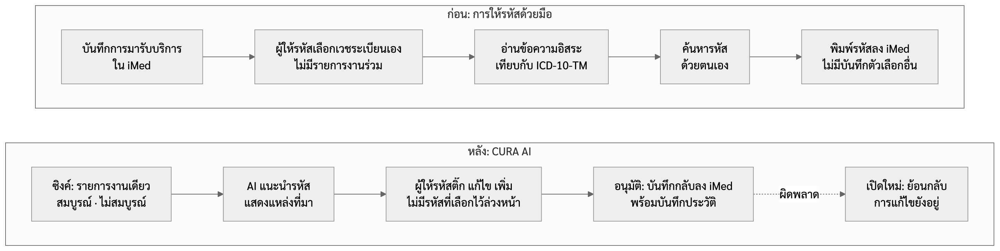
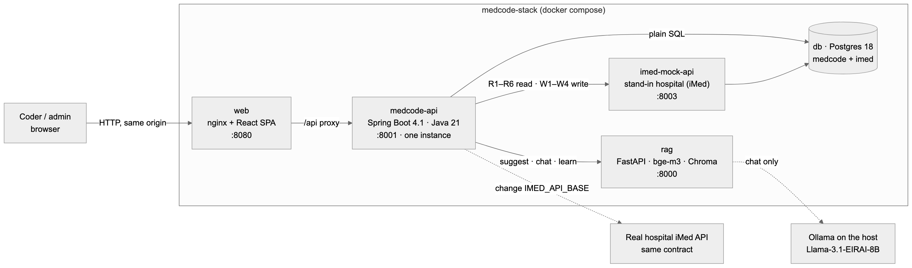
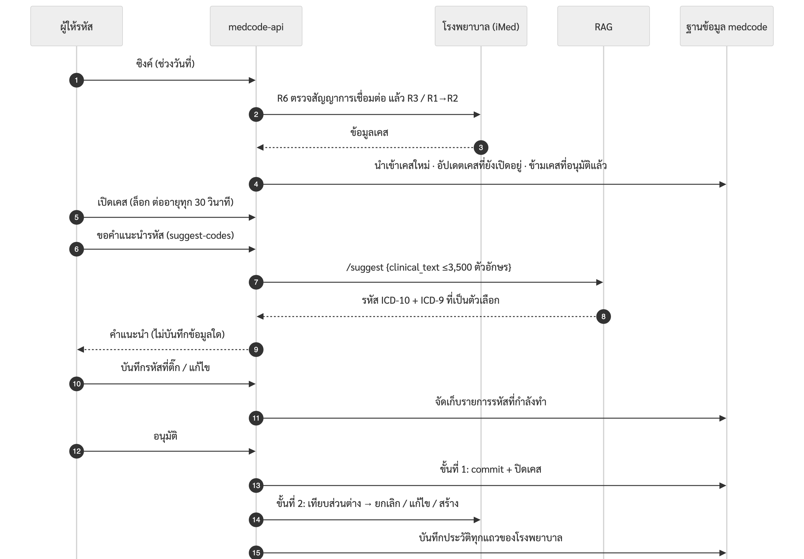
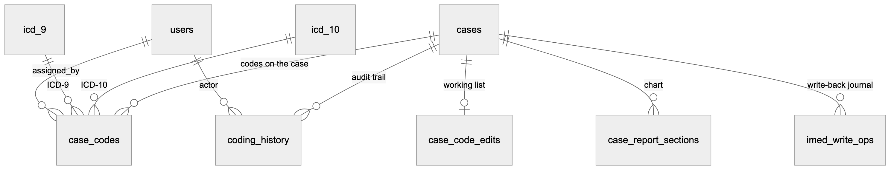
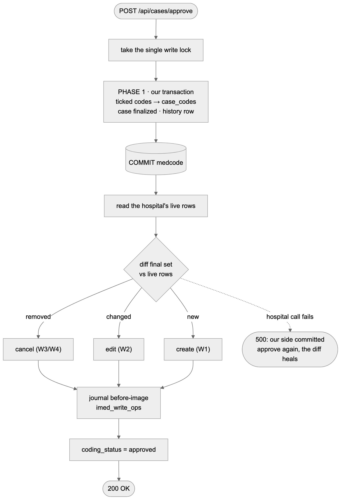
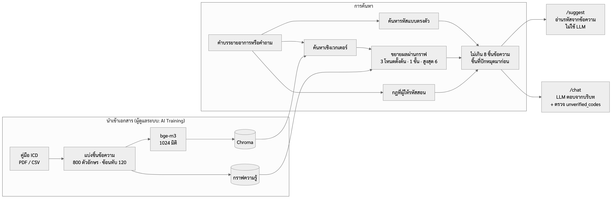

ภาพที่ 3.5 · รายละเอียดเคส: เวชระเบียนด้านซ้าย รหัส ICD-10 และ ICD-9 ที่ AI แนะนำพร้อมความมั่นใจด้านขวา โดยไม่มีรหัสใดถูกติ๊กไว้ล่วงหน้า
CURA AI ระบบผู้ช่วยให้รหัสโรคและหัตถการด้วยปัญญาประดิษฐ์
(CURA AI: AI-Assisted ICD-10 and ICD-9 Coding System)
Team Suvarna Stack
Guntidamas Sangsawat
Aung Kyaw Si
Zwe Thura Aung
Phyo Wai Yan
Lin Zaw
Xin Li
School of Applied Digital Technology
MAE FAH LUANG UNIVERSITY
2026
© COPYRIGHT BY MAE FAH LUANG
UNIVERSITY
CURA AI ระบบผู้ช่วยให้รหัสโรคและหัตถการด้วยปัญญาประดิษฐ์
(CURA AI: AI-Assisted ICD-10 and ICD-9 Coding System)
Team Suvarna Stack
Guntidamas Sangsawat, Aung Kyaw Si, Zwe Thura Aung, Phyo Wai Yan Lin Zaw, Xin Li
บทคัดย่อ
โครงงานนี้พัฒนา CURA AI ระบบเว็บที่ช่วยเจ้าหน้าที่ให้รหัสโรคของโรงพยาบาลในการกำหนดรหัสการวินิจฉัย ICD-10 และรหัสหัตถการ ICD-9 ให้กับการมารับบริการของผู้ป่วยนอก ระบบดึงข้อมูลการมารับบริการจากระบบสารสนเทศโรงพยาบาล (iMed) มารวมเป็นรายการงานเดียว เสนอรหัสที่ค้นคืนจากคู่มือ ICD ที่อัปโหลดไว้พร้อมแสดงแหล่งที่มา และบันทึกรหัสที่ผู้ให้รหัสอนุมัติกลับลงระบบของโรงพยาบาล การออกแบบให้ผู้ให้รหัสเป็นผู้ตัดสินใจเสมอ การขอคำแนะนำไม่บันทึกข้อมูลใด ไม่มีรหัสที่ AI แนะนำถูกเลือกไว้ล่วงหน้า การอนุมัติทุกครั้งบันทึกบัญชีผู้อนุมัติ และการบันทึกกลับแบบเปรียบเทียบส่วนต่างพร้อมบันทึกประวัติทำให้ย้อนกลับการอนุมัติได้ การค้นคืนและการสร้างข้อความทำงานบนโมเดลภายในเครื่อง จึงไม่ส่งข้อมูลผู้ป่วยไปยังบริการ AI บนคลาวด์ ระบบประกอบด้วย 5 บริการที่รันเป็นคอนเทนเนอร์ ทดสอบกับระบบจำลอง API ของโรงพยาบาลที่ตรงตามสัญญาเชื่อมต่อ และใช้ข้อมูลสมมุติเท่านั้น การประเมินที่ระดับ TRL 4 พบว่าการทดสอบอัตโนมัติผ่าน 191 จาก 192 รายการ ไม่มีคำขอที่ล้มเหลวเมื่อมีผู้ใช้พร้อมกันสูงสุด 50 ราย แต่ความแม่นยำของ AI ยังต่ำ ใน 42 กรณีสมมุติ รหัส ICD-10 ที่ถูกต้องอยู่อันดับแรก 0 กรณี และอยู่ในรายการคำแนะนำ 3 กรณี เพราะการค้นคืนจากคำบรรยายอาการไปตกที่ส่วนดัชนีของคู่มือ แม้การค้นหาด้วยรหัสจะทำงานได้ถูกต้อง ระบบยังไม่ได้ทดสอบกับผู้ป่วยจริง ผู้ให้รหัสจริง หรือ API จริงของโรงพยาบาล และงานด้านการปฏิบัติตามพระราชบัญญัติคุ้มครองข้อมูลส่วนบุคคลยังต้องดำเนินการต่อ
คำสำคัญ: การให้รหัสโรค, ICD-10-TM, ICD-9-CM, การสร้างข้อความเสริมด้วยการค้นคืน (RAG), มนุษย์ร่วมตัดสินใจ, การเชื่อมต่อระบบสารสนเทศโรงพยาบาล, PDPA
Abstract
This project developed CURA AI, a web system that helps hospital medical coders assign ICD-10 diagnosis codes and ICD-9 procedure codes to outpatient visits. It pulls visits from the hospital information system (iMed) into one worklist, suggests codes retrieved from the uploaded ICD manuals with their source shown, and writes the codes a coder approves back into the hospital’s own records. The coder stays the decision maker: asking for suggestions writes nothing, no suggested code is pre-selected, every approval is attributed to the signed-in account, and a diff-based, journaled write-back makes every approval reversible. Retrieval and generation run on local models, so no patient data is sent to a cloud AI service. The five services run as containers against a contract-faithful mock of the hospital API, on synthetic data only. Evaluation at TRL 4 found 191 of 192 automated tests passing and zero failed requests at up to 50 concurrent clients, but a weak AI baseline: on 42 synthetic scenarios the correct ICD-10 code ranked first in none and appeared among the suggestions in three, because retrieval from symptom narratives lands on index-like pages of the manual even though lookup by code works. The system has not been tested with real patients, real coders or the real hospital API, and PDPA compliance work remains outstanding.
Keywords: medical coding, ICD-10-TM, ICD-9-CM, retrieval-augmented generation, human-in-the-loop, hospital information system integration, PDPA
รายงานฉบับนี้นำเสนอระบบ CURA AI ซึ่งพัฒนาโดยทีม Suvarna
Stack ผลิตภัณฑ์นี้พัฒนาขึ้นภายใต้ชื่อชั่วคราว MedCode AI
ซึ่งยังคงใช้อยู่ในชื่อคลังโค้ด (repository) บริการ และฐานข้อมูลของระบบ
(medcode-api, medcode-stack และฐานข้อมูล
medcode) รวมถึงในเอกสารโครงการบางฉบับที่อ้างถึงในรายงานนี้
การมารับบริการของผู้ป่วยแต่ละครั้งที่โรงพยาบาลพันธมิตรจะก่อให้เกิดเวชระเบียน ได้แก่
บันทึกของแพทย์ (อาการสำคัญ ประวัติการเจ็บป่วยปัจจุบัน การตรวจร่างกาย และการประเมิน)
ผลการตรวจทางห้องปฏิบัติการ คำสั่งใช้ยา หัตถการ และสัญญาณชีพ หลังการมารับบริการ
เจ้าหน้าที่ให้รหัสโรค (medical coder)
จะอ่านเวชระเบียนนั้นและกำหนดรหัสมาตรฐาน ได้แก่ ICD-10 สำหรับ สิ่งที่ผิดปกติ
(การวินิจฉัย) และ ICD-9 / ICD-9-CM สำหรับ สิ่งที่ได้กระทำ (หัตถการ) โดยใช้
ICD-10-TM
ซึ่งเป็นฉบับดัดแปลงระดับชาติของประเทศไทยจากมาตรฐานของ WHO ฉบับนี้เพิ่มเล่มที่ 5
ว่าด้วยกฎการให้รหัส และกลุ่มรหัสเฉพาะของประเทศไทย (เช่น U50–U77
สำหรับการแพทย์แผนดั้งเดิม เป็นต้น) ต่อยอดจากบัญชีจำแนก (tabular list) ของ WHO
(medcode-api docs/medical-glossary.md หัวข้อ 4–5)
รหัสเหล่านี้ไม่ใช่งานเอกสารที่ทำเพียงเพื่อให้มีเอกสาร สำหรับการดูแลผู้ป่วยใน (IPD)
โรงพยาบาลในประเทศไทยได้รับการเบิกจ่ายค่ารักษาตามระบบ DRG
(กลุ่มวินิจฉัยโรคร่วม; diagnosis-related group) กล่าวคือ รหัสจะจัดการรับผู้ป่วยไว้รักษา
(admission) แต่ละครั้งเข้าสู่กลุ่ม แต่ละกลุ่มมีน้ำหนักสัมพัทธ์ (relative weight)
และค่าตอบแทนมีค่าประมาณ น้ำหนัก × อัตราจ่าย
เนื่องจากรหัสมีผลต่อเงินที่โรงพยาบาลได้รับ สำนักงานหลักประกันสุขภาพแห่งชาติ (สปสช.)
จึงตรวจสอบเวชระเบียนเทียบกับรหัสที่ส่งเบิก โดยเฝ้าระวังทั้งการให้รหัสต่ำกว่าความเป็นจริง
(under-coding) ซึ่งทำให้โรงพยาบาลสูญเสียรายได้ที่ควรได้รับ และ “DRG creep” /
การให้รหัสสูงกว่าความเป็นจริง (upcoding) การตรวจสอบของ สปสช. ในปี 2015
ครอบคลุมเวชระเบียนประมาณ 119,000 ฉบับ โดยตรวจการวินิจฉัยหลักในสรุปการจำหน่ายผู้ป่วย
(discharge summary) เทียบกับข้อมูลรหัสที่บันทึกไว้
(docs/medical-glossary.md หัวข้อ 1 ซึ่งอ้างอิงเอกสารการตรวจสอบของ
สปสช. ที่ระบุไว้ในส่วน Sources ของไฟล์ดังกล่าว) ดังนั้น
การให้รหัสที่ถูกต้องจึงเป็นทั้งงานด้านการบันทึกเวชระเบียนทางคลินิกและงานด้านการปฏิบัติตามข้อกำหนด
ซึ่งส่งผลจริงต่อการเงินและผลการตรวจสอบของโรงพยาบาล
ปัจจุบัน การให้รหัสเป็นงานที่มนุษย์ทำด้วยมือทีละเวชระเบียน ภายใต้กฎเกณฑ์ที่เข้มงวด
(ICD-10-TM เล่มที่ 5) ซึ่งเครื่องมือที่ออกแบบอย่างง่ายเกินไปมักทำผิดพลาดเป็นประจำ
ตัวอย่างกฎที่ทำให้การให้รหัสอย่างถูกต้องเป็นงานที่ยากจริง ไม่ใช่เพียงน่าเบื่อ มีดังนี้
(docs/medical-glossary.md หัวข้อ 5)
กล่าวโดยสรุป ผู้ให้รหัสต้องอ่านข้อความทางคลินิกภาษาไทยและภาษาอังกฤษที่ไม่มีโครงสร้าง
ซึ่งมีคำย่อเฉพาะท้องถิ่นจำนวนมาก (HT, DM,
s/p, r/o และข้อความภาษาไทยที่ปะปนอยู่ ซึ่งรวบรวมไว้ใน
docs/medical-glossary.md หัวข้อ 10)
แล้วนำไปเทียบกับกฎเกณฑ์ระดับชาติจำนวน 5 เล่ม สำหรับการมารับบริการทุกครั้ง ตลอดทั้งวัน
นี่คือกระบวนการที่ขั้นตอนการทำงานโดยมี AI ช่วยในโครงการนี้สร้างขึ้นเพื่อเร่งให้เร็วขึ้น
ไม่ใช่เพื่อทดแทน:
“การตัดสินว่ารหัสใดควรอยู่ในเวชระเบียนเป็นอำนาจของผู้ให้รหัสที่เป็นมนุษย์และได้รับการรับรอง
ภายใต้กฎ [ของ ICD-10-TM]… ระบบนี้ทำหน้าที่จัดเก็บ ตรวจสอบ
และส่งต่อการตัดสินใจของผู้ให้รหัส”
(docs/medical-glossary.md หัวข้อ 1 หมายเหตุขอบเขตตอนต้น)
คำศัพท์ที่ใช้บนแดชบอร์ดของระบบเองช่วยให้เห็นขนาดของปัญหาเป็นรูปธรรมแทนที่จะเป็นนามธรรม
การมารับบริการแต่ละครั้งเข้ามาจากระบบ iMed ของโรงพยาบาลพร้อมเอกสารทางคลินิก
แต่บ่อยครั้งไม่มีรหัสครบชุด ในชุดข้อมูลสาธิตที่เตรียมไว้ล่วงหน้า (seeded demo dataset)
ซึ่งจัดรูปแบบตามข้อมูลที่ดึงออกมาจริงของโรงพยาบาล การซิงค์หนึ่งครั้งจะโหลด
การมารับบริการของผู้ป่วยนอก 140 รายการ ในจำนวนนี้ 60 รายการ
“ไม่สมบูรณ์” คือขาดรหัสการวินิจฉัย ICD-10 ขาดรหัสหัตถการ ICD-9
หรือขาดทั้งสองอย่าง และ 80 รายการ “สมบูรณ์” (นับจากระบบที่กำลังทำงานอยู่ เมื่อวันที่ 23
กันยายน 2026) อภิธานศัพท์ของโครงการระบุชัดเจนว่า “สมบูรณ์”
ในที่นี้หมายความเพียงว่าข้อมูลของโรงพยาบาลเองมีรหัสทั้งสองระบบอยู่แล้ว ณ เวลาที่ซิงค์ และ
ไม่ได้ หมายความว่ามนุษย์ได้ตรวจทานรหัสแล้ว
(docs/medical-glossary.md หัวข้อ 11)
งานค้างที่ไม่สมบูรณ์ยังถูกแบ่งกลุ่มย่อยตามประเภทของงานที่เป็นเหตุของการมารับบริการ ได้แก่
อายุรกรรม ศัลยกรรม CT/X-ray และอื่น ๆ
เนื่องจากผู้ให้รหัสที่คัดแยกลำดับความสำคัญของรายการงานจำเป็นต้องทราบว่าเคสใดต้องใช้ความเชี่ยวชาญด้านใด
(medcode-api/docs/api-contract.md,
incompleteGroups) การแบ่งกลุ่มนี้มีขึ้นก็เพราะก่อนมีระบบนี้
ไม่มีที่ใดที่ผู้ให้รหัส (หรือหัวหน้างานให้รหัส) จะมองเห็นคิวงานที่ยังไม่ได้ให้รหัสทั้งหมดได้ในที่เดียว
โดยจัดกลุ่มตามประเภทงาน ครอบคลุมการมารับบริการของผู้ป่วยนอก (OPD) ทั้งโรงพยาบาล
รายงานฉบับนี้ตั้งใจ ไม่ระบุขนาดงานค้างจริง ระยะเวลาดำเนินการ
หรือจำนวนผู้ให้รหัส ของโรงพยาบาลพันธมิตร
เนื่องจากยังไม่มีค่าใดในจำนวนนี้ที่วัดจากข้อมูลจริงในสภาพแวดล้อมใช้งานจริง
มีเพียงการวัดจากชุดข้อมูลสาธิตที่เป็นข้อมูลสมมุติ
และการกุตัวเลขเหล่านี้ขึ้นเองจะบั่นทอนความน่าเชื่อถือของตัวเลขทุกตัวที่วัดได้ในบทที่ 6 และบทที่
7 การวัดค่าเหล่านี้ต้องใช้ข้อมูลการมารับบริการที่โรงพยาบาลเคยให้รหัสไว้ในอดีต
ซึ่งตรงกับรายการ “Proving the AI is accurate enough” (การพิสูจน์ว่า AI
มีความแม่นยำเพียงพอ) ใน medcode-api/docs/DEPLOYMENT-PREP.md
หัวข้อ 2
เอกสารประกอบเรื่องความพร้อมสำหรับการนำไปใช้งานจริงของคณะผู้จัดทำระบุชัดเจนว่า
คุณค่าหลักของผลิตภัณฑ์คือ การช่วยเหลือ ไม่ใช่การทดแทน:
“มนุษย์เป็นผู้อนุมัติทุกรหัส AI ทำหน้าที่เพียงแนะนำ
และไม่เคยเขียนข้อมูลลงระบบของโรงพยาบาลด้วยตนเอง … AI ไม่สามารถกุรหัสขึ้นเองได้ AI
ไม่เขียนรหัสจากจินตนาการ แต่ค้นหาในคู่มือการให้รหัส นำรหัสที่ปรากฏอยู่ในคู่มือจริงมาใช้
และแสดงข้อความที่พบรหัสเหล่านั้น”
(medcode-api/docs/DEPLOYMENT-PREP.md ส่วน “Safety”)
ข้อความนี้ไม่ใช่เพียงถ้อยคำบนหน้าจอโดยบังเอิญ แต่ถูกบังคับใช้ไว้ในสัญญาการเชื่อมต่อ API
โดยตรง กล่าวคือ POST /api/cases/{caseId}/suggest-codes
ระบุไว้ในเอกสารว่าไม่เขียนข้อมูลใด ๆ เลย
(medcode-api/docs/api-contract.md)
และช่องทางเดียวที่มีผลต่อฐานข้อมูลของโรงพยาบาลคือการเรียก
POST /api/cases/approve ซึ่งแยกต่างหากและต้องเรียกอย่างชัดแจ้ง
โดยบัญชีผู้ใช้ที่เป็นมนุษย์ซึ่งเข้าสู่ระบบแล้วและถูกบันทึกเพื่อการตรวจสอบ
เหตุผลที่การเลือกออกแบบเช่นนี้มีความสำคัญต่อ การนิยามปัญหา ไม่ใช่เพียงต่อการนำไปปฏิบัติ คือ การให้รหัสตาม ICD-10-TM มีกฎ “ห้ามแปลงผลการตรวจทางห้องปฏิบัติการเป็นการวินิจฉัย” และการใช้วิจารณญาณอีกหลายประการที่โมเดลไม่สามารถตรวจสอบเทียบกับความจริง (ground truth) ได้ด้วยตนเอง (หัวข้อ 1.2 ข้างต้น) เครื่องมือที่ให้รหัสอัตโนมัติโดยไม่แจ้งให้ทราบย่อมเสี่ยงต่อความล้มเหลวในรูปแบบ DRG creep / การให้รหัสต่ำกว่าความเป็นจริง ซึ่ง สปสช. ตรวจสอบอยู่แล้ว (หัวข้อ 1.1) ดังนั้น ปัญหาที่โครงการนี้แก้ไขจึงแคบกว่าและมีเหตุผลรองรับได้ดีกว่า “การให้รหัสทางการแพทย์แบบอัตโนมัติ” กล่าวคือ “มอบจุดเริ่มต้นที่เร็วกว่าและยึดโยงกับแหล่งที่มาได้ดีกว่าให้แก่ผู้ให้รหัส และทำให้การตัดสินใจอนุมัติหรือปฏิเสธเป็นไปอย่างรวดเร็ว ตรวจสอบได้ และย้อนกลับได้”
ข้อจำกัดด้านขอบเขต 2 ประการที่ต้องระบุอย่างตรงไปตรงมา เนื่องจากมีผลต่อเนื้อหาทั้งหมดที่ตามมาในรายงานนี้
GET /api/cases) แสดงเฉพาะการมารับบริการของผู้ป่วยนอกเท่านั้น
(encountertype = '0') ส่วนการรับไว้รักษาแบบ IPD จำนวน 10
รายการในชุดข้อมูลสาธิตถูกตั้งใจไม่นำมาแสดง
(imed-mock-api/DEMO-SETUP.md) ทั้งนี้ DRG
ซึ่งเป็นกลไกการเบิกจ่ายค่ารักษาที่มีผลกระทบสูงที่สุดตามที่อธิบายในหัวข้อ 1.1
ใช้กับการรับไว้รักษาแบบ IPD ดังนั้น
ผลกระทบทางการเงินของแดชบอร์ดในปัจจุบันจึงแคบกว่าที่กรอบการตรวจสอบ DRG
ข้างต้นสื่อให้เข้าใจ นี่คือขอบเขตที่มีอยู่จริง ไม่ใช่ความบกพร่องที่จะปกปิดไว้imed-mock-api/scripts/generate_demo_data.py ไม่ได้ดึงมาจากระบบ
iMed ที่ใช้งานจริงของโรงพยาบาล (ดูบทที่ 5
สำหรับที่มาของข้อมูลโดยละเอียดและคำแถลงความโปร่งใส) ปัญหาที่อธิบายข้างต้นเป็นปัญหาจริง
โดยอ้างอิงจากกฎเกณฑ์การให้รหัสจริง สัญญาการเชื่อมต่อ API จริง
และคำศัพท์ในขั้นตอนการทำงานจริงของโรงพยาบาล ตามที่บันทึกไว้ในเอกสารต่าง ๆ
ของโครงการ แต่การสาธิต แนวทางแก้ไข
ยังไม่เคยดำเนินการกับเวชระเบียนผู้ป่วยจริงผลงานนี้มีเป้าหมายเพื่อสร้างระบบ และทดสอบระบบในภาพรวม โดยระบบดังกล่าว
บทที่ 7 ประเมินผลลัพธ์เทียบกับวัตถุประสงค์ทั้ง 6 ข้อนี้
การดำเนินงานเริ่มตั้งแต่วันที่ 21 กรกฎาคม ถึง 23 กันยายน 2026 ครอบคลุมคลังโค้ด 5
แห่ง (รวม 283 commit ตาม git log)
หลักไมล์ที่ระบุวันที่ด้านล่างนำมาจากบันทึกความก้าวหน้าของโครงการ
(medcode-api/CLAUDE.md) และประวัติ commit
| วันที่ (2026) | หลักไมล์ |
|---|---|
| 21–22 ก.ค. | สร้างระบบส่วนหลัง (backend) ใหม่ด้วย Spring Boot จัดทำเอกสารสัญญาการเชื่อมต่อ API และแยกฝั่งโรงพยาบาลออกเป็นบริการจำลองและฐานข้อมูลของตนเอง |
| 23–24 ก.ค. | การซิงค์จากโรงพยาบาล การเข้าสู่ระบบและบัญชีผู้ใช้ของเจ้าหน้าที่ และสร้างการบันทึกกลับใหม่บน “iMed Diagnosis and Medical Discharge API” ของจริงของโรงพยาบาล |
| 26–27 ก.ค. | เริ่มพัฒนาบริการ AI (RAG) และเชื่อมต่อส่วนติดต่อผู้ใช้บนเว็บ (web UI) ใหม่สำหรับผู้ให้รหัสเข้ากับระบบส่วนหลัง |
| 28 ก.ค. – 7 ส.ค. | แยกแคตตาล็อก ช่วงเวลาของหัตถการ มุมมองเวชระเบียนแบบโรงพยาบาล การปรับปรุงด้านการเข้าถึง (accessibility) การตรวจทานรหัสแบบเลือกก่อน (selection-first) และสถานะการให้รหัสบนระเบียนของโรงพยาบาล |
| 15–17 ส.ค. | แชต Agent แบบสตรีม (streaming) พร้อมกลไกป้องกันด้านการยึดโยงกับแหล่งที่มา (grounding guard) และบรรจุบริการทั้ง 5 บริการลงในคอนเทนเนอร์ภายใน compose stack เดียว |
| 19–20 ส.ค. | จัดทำสัญญาการอ่านข้อมูล (R1–R6) สำหรับโรงพยาบาลและสร้างระบบจำลองตามสัญญา ปรับฐานชุดทดสอบใหม่ และกำหนดให้ Flyway เป็นแหล่งเดียวของ schema |
| 22–26 ส.ค. | กฎที่ผู้ให้รหัสสอนพร้อมการกำหนดความเป็นเจ้าของ การติดดาวเคสที่ใช้ร่วมกัน และตัวกรองในหน้าวิเคราะห์ข้อมูล |
| 21 ก.ย. | รอบการประเมินผล: ชุดทดสอบ การทดสอบภาระงาน ความแม่นยำของ AI และภาพหน้าจอ |
| 23 ก.ย. | จัดทำเอกสารและรายงานฉบับสมบูรณ์ |
แหล่งอ้างอิงทุกแหล่งในบทนี้ได้รับการสืบค้นและตรวจสอบเมื่อวันที่ 18 กันยายน 2026 คำอธิบายผลิตภัณฑ์ของผู้จำหน่ายในหัวข้อ 2.1 นำมาจากเอกสารผลิตภัณฑ์ ซึ่งเป็นสื่อทางการตลาดและได้รับการพิจารณาในฐานะดังกล่าว
ระบบโรงพยาบาลขนาดใหญ่ โดยเฉพาะในตลาดสหรัฐอเมริกา ใช้ซอฟต์แวร์ การให้รหัสโดยใช้คอมพิวเตอร์ช่วย (computer-assisted coding: CAC) อยู่แล้ว ซอฟต์แวร์ดังกล่าวเป็นกลไกที่อาศัยกฎและการประมวลผลภาษาธรรมชาติ (NLP) ในการอ่านเวชระเบียนและแนะนำรหัสให้เจ้าหน้าที่ให้รหัสโรคซึ่งเป็นมนุษย์ยอมรับหรือปฏิเสธ ตัวอย่างผลิตภัณฑ์เชิงพาณิชย์ที่เป็นที่รู้จัก 2 รายการ ได้แก่
ผลิตภัณฑ์เหล่านี้มีความสมบูรณ์และอยู่ในระดับองค์กร
และที่สำคัญอย่างยิ่งต่อประเด็นด้านสถาปัตยกรรมในหัวข้อ 2.3 คือ ผลิตภัณฑ์เหล่านี้สร้างขึ้นโดยยึด
ระบบรหัสของสหรัฐอเมริกา (ICD-10-CM, CPT)
การนำไปใช้งานจริงบนคลาวด์หรือภายในองค์กร (on-prem) ขนาดใหญ่
และ สิทธิ์การใช้งานเชิงพาณิชย์แบบคิดตามจำนวนผู้ใช้ /
ตามจำนวนสถานพยาบาล เอกสารสาธารณะที่พบไม่มีฉบับใดกล่าวถึง ICD-10-TM
(ฉบับดัดแปลงระดับชาติของประเทศไทย) บันทึกทางคลินิกภาษาไทย
หรือคำศัพท์ของระบบหลักประกันสุขภาพระดับชาติของไทยที่
medical-glossary.md ของโครงการนี้บันทึกไว้ (UCS/CSMBS/SSS)
ผลิตภัณฑ์เหล่านี้เป็นระบบที่ใช้งานจริงซึ่งใกล้เคียงที่สุดกับ “การให้รหัสโดยมี AI
ช่วยพร้อมขั้นตอนการอนุมัติโดยมนุษย์”
ซึ่งเป็นการตัดสินใจหลักด้านการออกแบบของโครงการนี้เช่นกัน (บทที่ 1 หัวข้อ 1.4)
แต่ไม่สามารถนำมาใช้กับโรงพยาบาลในประเทศไทยได้ทันที เนื่องจากคำศัพท์ การใช้ภาษาปะปนกัน
และข้อจำกัดด้านการติดตั้งภายในองค์กรและถิ่นที่อยู่ของข้อมูล (data residency) (หัวข้อ
2.3)
การสร้างข้อความเสริมด้วยการค้นคืน (retrieval-augmented generation: RAG) คือการค้นคืน (retrieval) ข้อความอ้างอิงที่เกี่ยวข้องก่อนให้โมเดลภาษาตอบ ปัจจุบันมีสายงานวิจัยล่าสุดที่ดำเนินอยู่อย่างต่อเนื่องซึ่งประยุกต์ใช้ RAG กับการให้รหัส ICD โดยเฉพาะ และเกี่ยวข้องโดยตรงกับสถาปัตยกรรมของโครงการนี้ (บทที่ 4) ดังนี้
DEPLOYMENT-PREP.md หัวข้อ 2 “Proving the AI is accurate
enough” — ดูบทที่ 8) https://pmc.ncbi.nlm.nih.gov/articles/PMC11527068/RAG/app/core/rag.py สั่งให้โมเดล
“Answer ONLY using the provided context… If the context does not contain
the answer, say you don’t know,” และการตรวจสอบการยึดโยงกับแหล่งที่มา
(grounding) ที่แยกต่างหาก (_verify_codes)
จะทำเครื่องหมายรหัสใดก็ตามที่คำตอบของโมเดลกล่าวถึงแต่ไม่ปรากฏในชิ้นข้อความ (chunk)
ที่ค้นคืนมา ให้เป็น unverified_codes ก่อนที่จะถึงมือผู้ให้รหัส https://arxiv.org/pdf/2505.01146จากแหล่งอ้างอิงทั้ง 5 แหล่ง รูปแบบที่ตีพิมพ์มีความสอดคล้องกัน คือ RAG
ให้ผลดีกว่า LLM ที่ใช้เพียงลำพังในการให้รหัส ICD และการให้รหัสโดยมี RAG
ช่วยสามารถเข้าใกล้หรือสูงกว่าเกณฑ์อ้างอิงของผู้ให้รหัสที่เป็นมนุษย์ได้ในกลุ่มตัวอย่างบางกลุ่ม
แต่ทุกการศึกษาประเมินโดยอิงกับภาษา รหัสฉบับดัดแปลง และข้อมูลของระบบสุขภาพ
เฉพาะแห่ง และไม่มีแหล่งอ้างอิงใดที่พบซึ่งประเมินด้วยข้อมูลภาษาไทยหรือ
ICD-10-TM ชุดข้อมูลสาธิตและดัชนี RAG ของโครงการนี้ (ICD-10, ICD-9 และเอกสาร PDF
อ้างอิง ICD-10-TM สำหรับ PCU — ดู RAG/data/documents.json)
สร้างขึ้นเพื่อเริ่มต้นปิดช่องว่างนี้โดยตรง การวัดความแม่นยำครั้งแรกของระบบนี้
ซึ่งวัดบนข้อมูลสมมุติเท่านั้น รายงานไว้ในบทที่ 6 (หัวข้อ 6.3)
และยังไม่มีการวัดเทียบกับการให้รหัสจริงของโรงพยาบาล
คณะผู้จัดทำเลือกใช้ไปป์ไลน์ที่ทำงาน ภายในเครื่องทั้งหมด
ประกอบด้วยเวกเตอร์ฝังตัว (embedding) จาก BAAI/bge-m3
ฐานข้อมูลเวกเตอร์ Chroma ที่จัดเก็บถาวรบนดิสก์ และ LLM ภายในเครื่องขนาดเล็ก (โมเดล
Llama-3.1 ขนาด 8B ที่ให้บริการโดยเซิร์ฟเวอร์ Ollama ซึ่งทำงานโดยตรงบนเครื่องแม่ข่าย
(host-native) ในระบบที่นำไปใช้งาน หรือ
Qwen/Qwen2.5-0.5B-Instruct
ที่ทำงานภายในโปรเซสเดียวกันเป็นตัวสำรอง) แทนการเรียกใช้ API ของ LLM บนคลาวด์
(OpenAI, Anthropic, Google เป็นต้น) นี่คือการตัดสินใจด้านสถาปัตยกรรมที่มีเหตุผลรองรับ
3 ประการ ไม่ใช่การตั้งสมมุติฐานเอาเอง
1. ถิ่นที่อยู่ของข้อมูลและกฎหมายไทย ข้อความในเวชระเบียนผู้ป่วย
ได้แก่ อาการสำคัญ คำบรรยายประวัติการเจ็บป่วยปัจจุบัน และผลการตรวจทางห้องปฏิบัติการ เป็น
“ข้อมูลส่วนบุคคลที่มีความอ่อนไหว” ซึ่งพระราชบัญญัติคุ้มครองข้อมูลส่วนบุคคล พ.ศ. 2562 (PDPA)
ของประเทศไทยควบคุมเข้มงวดที่สุด (บทที่ 5 อธิบายประเด็นนี้โดยละเอียด)
รายการตรวจสอบก่อนนำไปใช้งานจริงของคณะผู้จัดทำได้ศึกษาประเด็นนี้โดยตรงแล้ว
และพบว่าหน่วยงานกำกับดูแลด้านข้อมูลของประเทศไทย (PDPC)
กำลังร่างแนวปฏิบัติเฉพาะด้านสุขภาพ
และการส่งข้อมูลไปยังเซิร์ฟเวอร์นอกประเทศไทยมีข้อจำกัดทางกฎหมาย
เอกสารฉบับเดียวกันระบุว่า Google Cloud เปิดภูมิภาค (region) กรุงเทพฯ
สำหรับงานประมวลผลในเดือนมกราคม 2026 แต่ ภูมิภาคดังกล่าวไม่มี GPU
ดังนั้น การเรียกใช้ LLM บนคลาวด์ที่เร่งความเร็วด้วย GPU
สำหรับงานนี้ย่อมต้องออกไปนอกประเทศไทยโดยปริยาย
(medcode-api/docs/DEPLOYMENT-PREP.md หัวข้อ 3 “Where it runs
— and the catch” ซึ่งอ้างอิงประกาศเปิดตัวภูมิภาคกรุงเทพฯ ของ Google Cloud
และการรับฟังความคิดเห็นของ PDPC เรื่องการโอนข้อมูลข้ามพรมแดน
โดยทั้งสองแหล่งได้รับการตรวจสอบซ้ำแล้วว่าเป็นแหล่งข้อมูลจริงในบทที่ 5)
โมเดลภายในเครื่องช่วยหลีกเลี่ยงประเด็นนี้ได้ทั้งหมด
เนื่องจากไม่มีข้อมูลใดออกนอกเครือข่ายของโรงพยาบาล 2.
ลักษณะของต้นทุน API ของ LLM
บนคลาวด์คิดค่าบริการตามจำนวนโทเค็นและจำนวนคำขอไปอย่างไม่มีกำหนด
ส่วนโมเดลภายในเครื่อง เมื่อดาวน์โหลดแล้ว (ไฟล์โมเดลขนาดไม่กี่กิกะไบต์ ได้แก่ ประมาณ 2.3
GB สำหรับโมเดลเวกเตอร์ฝังตัว bge-m3 รวมกับโมเดลสร้างข้อความ)
จะไม่มีค่าใช้จ่ายต่อคำแนะนำแต่ละครั้ง
เอกสารนำเสนอผลงานของคณะผู้จัดทำระบุว่านี่เป็นคุณสมบัติที่ตั้งใจออกแบบไว้:
“ไม่มีค่าธรรมเนียมต่อรหัส ไม่มีค่าธรรมเนียมต่อผู้ใช้
ไม่มีค่าบริการคลาวด์หากทำงานภายในโรงพยาบาล…
ต้นทุนไม่เพิ่มขึ้นแม้โรงพยาบาลจะให้รหัสมากขึ้น”
(DEPLOYMENT-PREP.md ส่วน “What it costs”)
สำหรับโรงพยาบาลรัฐที่ดำเนินงานด้วยงบประมาณจากสำนักงานหลักประกันสุขภาพแห่งชาติ
(สปสช.) (บทที่ 1 หัวข้อ 1.1) งานที่มีต้นทุน AI
เพิ่มขึ้นตามจำนวนผู้ป่วยย่อมโน้มน้าวให้ยอมรับได้ยากกว่าการซื้อ GPU
ครั้งเดียวในราคาคงที่อย่างมาก 3.
ความพร้อมใช้งานและความเป็นอิสระจากผู้ให้บริการ ในสถาปัตยกรรมนี้ RAG
ถูกออกแบบอย่างชัดเจนให้เป็นบริการ ทางเลือก (optional) กล่าวคือ
ส่วนอื่นของระบบยังทำงานได้แม้ปิดบริการนี้ (บทที่ 4 หัวข้อ 4.3) แต่การพึ่งพา API
บนคลาวด์จะเพิ่มรูปแบบความล้มเหลวจากภายนอก ได้แก่
เครือข่ายหรือความพร้อมให้บริการของผู้ให้บริการ
เข้ามาในขั้นตอนการทำงานที่คณะผู้จัดทำต้องการให้ลดระดับการทำงานลงอย่างนุ่มนวล (degrade
gracefully) แทนการล้มเหลวทั้งหมด หากความช่วยเหลือจาก AI ไม่พร้อมใช้งาน
ข้อแลกเปลี่ยนที่คณะผู้จัดทำเลือกอย่างชัดแจ้ง คือ
ยอมแลกคุณภาพการค้นคืนและขีดความสามารถของโมเดล
เพื่อให้ได้การควบคุมข้อมูลและต้นทุนที่คาดการณ์ได้ โมเดลขนาด 0.5B–8B
ที่ติดตั้งภายในเครื่องมีขีดความสามารถด้อยกว่าโมเดลระดับแนวหน้า (frontier)
บนคลาวด์อย่างเห็นได้ชัด แนวทางบรรเทาที่ซอร์สโค้ดของระบบนำมาใช้
คือการพึ่งพาการยึดโยงกับแหล่งที่มาจากการค้นคืนให้มากขึ้น (การตรวจสอบ
unverified_codes คำสั่ง “ตอบจากบริบทเท่านั้น” ในพรอมต์ระบบ และชั้นกฎ
“แนะนำรหัส (Suggest & Learn)” ที่ผู้ให้รหัสสอน ซึ่งทั้งหมดอธิบายรายละเอียดไว้ในบทที่
4) แทนการเพิ่มขนาดโมเดล ซึ่งสอดคล้องกับข้อค้นพบข้างต้นที่ว่า “การใช้พรอมต์แบบ RAG
ช่วยเพิ่มประสิทธิภาพของ LLM พื้นฐานได้อย่างมาก”
(การศึกษาเปรียบเทียบด้านการวินิจฉัยเนื้องอกในภาษาเยอรมัน)
เมื่อสังเคราะห์เนื้อหาจากหัวข้อ 2.1–2.3 พบช่องว่าง 3 ประการในงานก่อนหน้าที่ได้ทบทวน ซึ่งเป็นจุดที่โครงการนี้วางตำแหน่งไว้ ดังนี้
ข้อเท็จจริงด้านสถาปัตยกรรมและแบบจำลองข้อมูลในบทนี้มาจากเอกสารประกอบของรีโพซิทอรีและ Flyway migration ของระบบเอง โดยอ้างอิงแหล่งที่มาไว้ในเนื้อความ เพื่อให้ตรวจสอบแต่ละข้อกับโค้ดได้
บทนำเสนอความยาว 2
นาทีที่คณะผู้จัดทำเขียนไว้สำหรับคณะกรรมการตัดสินและผู้มีส่วนได้ส่วนเสียของโรงพยาบาลสรุปภาพนี้ไว้ได้ดีว่า
“ระบบนำการมารับบริการของผู้ป่วยออกมาจากระบบของโรงพยาบาล
แนะนำรหัสการวินิจฉัยและรหัสหัตถการ ผู้ให้รหัสซึ่งเป็นมนุษย์ตรวจสอบและอนุมัติ
แล้วรหัสที่อนุมัติจะถูกส่งกลับเข้าสู่เวชระเบียนของโรงพยาบาลโดยตรง”
(medcode-api/docs/PITCH-2MIN.md)
ขั้นตอนโดยละเอียดตามที่นำไปปฏิบัติจริงมีดังนี้
POST /api/sync)
ดึงการมารับบริการจากระบบ iMed ของโรงพยาบาลเข้าสู่แดชบอร์ดการให้รหัส
โดยจะดึงทั้งหมดหรือเฉพาะช่วงวันที่ที่กำหนดก็ได้ และในขณะเดียวกันก็ปรับปรุงแคตตาล็อกอ้างอิง
ICD-10/ICD-9 ให้เป็นปัจจุบันจากรายการหลัก (master list) ของโรงพยาบาลเอง
(medcode-api/docs/api-contract.md,
POST /api/sync)
การมารับบริการแต่ละรายการจะถูกจัดเข้ากลุ่มใดกลุ่มหนึ่งจาก 4 กลุ่มบนแดชบอร์ดซึ่งไม่ซ้อนทับกัน
ได้แก่ สมบูรณ์ (complete:
เข้ามาพร้อมรหัสครบทั้งสองระบบแล้วแต่ยังไม่ได้อนุมัติ) ไม่สมบูรณ์
(incomplete: ขาดรหัสการวินิจฉัยและ/หรือรหัสหัตถการ จัดกลุ่มตามประเภทงาน ได้แก่
อายุรกรรม/ศัลยกรรม/CT-เอกซเรย์/อื่น ๆ) เปิดใหม่ (reopened:
มีผู้ใช้ยกเลิกการอนุมัติที่ทำไว้ก่อนหน้า) และ เสร็จสิ้น (finished:
อนุมัติแล้ว)POST /api/cases/{id}/suggest-codes) — ผู้ให้รหัสเปิดเคส
แล้วระบบสร้างข้อความบรรยายทางคลินิก (clinical narrative) จากส่วนรายงานต่าง ๆ
ในเวชระเบียน (จำกัดไม่เกิน 3,500 ตัวอักษร
โดยให้อาการสำคัญและประวัติการเจ็บป่วยปัจจุบันมาก่อน) และขอรหัส ICD-10/ICD-9
ที่เป็นตัวเลือกจากบริการ RAG พร้อมคะแนนความมั่นใจและเอกสารต้นทางที่อ้างอิง การเรียกนี้
ไม่บันทึกข้อมูลใดเลย — ดูบทที่ 4 หัวข้อ 4.3medcode-api/docs/api-contract.md, ฟิลด์ code-role/origin)
ตั้งแต่วันที่ 2026-08-07 ขั้นตอนนี้เป็นแบบ เลือกก่อน
(selection-first) อย่างชัดเจน กล่าวคือ ไม่มีรหัสใดถูกติ๊กไว้ล่วงหน้า
ยกเว้นรหัสที่ผู้ให้รหัสป้อนเอง ผู้ให้รหัสเป็นผู้ติ๊กรหัสที่ควรอยู่ในเคส
(selected: true) แทนรูปแบบเดิมที่ “แนะนำทุกอย่างไว้ แล้วลบสิ่งที่ผิดออก”
(medcode-api/CLAUDE.md, หมุดหมาย “Selection-first code
review”)PUT /api/cases/{id}/codes) —
เก็บการแก้ไขระหว่างทำงานของผู้ให้รหัสไว้ ในฐานข้อมูลของระบบนี้เท่านั้น
โดยยังไม่มีการแตะต้องระบบของโรงพยาบาลPOST /api/cases/approve) —
เป็นการกระทำเดียวที่บันทึกกลับ (write-back) ลงระบบของโรงพยาบาล
ระบบเปรียบเทียบความแตกต่าง (diff)
ระหว่างรายการรหัสสุดท้ายที่ผู้ให้รหัสติ๊กไว้กับแถวข้อมูลปัจจุบันในระบบของโรงพยาบาล
แล้วสั่งสร้าง/แก้ไข/ยกเลิกเท่าที่จำเป็นน้อยที่สุดเพื่อให้ตรงกัน (รายละเอียดกลไกทั้งหมดอยู่ในบทที่
4 หัวข้อ 4.1)POST /api/cases/{id}/reopen)
ย้อนการอนุมัติทั้งสองฝั่ง โดยการแก้ไขของผู้ให้รหัสยังคงอยู่
มีเพียงสถานะสิ้นสุด/อนุมัติแล้วที่ถูกยกเลิก ระบบใช้บันทึกประวัติ (journal)
ที่เก็บภาพข้อมูลก่อนการเปลี่ยนแปลง (before-image) เพื่อคืนข้อมูลของโรงพยาบาลด้วย
ไม่ใช่เพียงสำเนาในระบบนี้ (medcode-api/docs/imed-integration.md,
“Reopen”)

ระบบประกอบด้วย 5 บริการที่สร้างและนำไปใช้งานได้อย่างเป็นอิสระต่อกัน โดยมีรีโพซิทอรีที่
6 ซึ่งไม่มีโค้ด ทำหน้าที่ประกอบบริการทั้งหมดเข้าด้วยกันสำหรับการใช้งานในเครื่องและการสาธิต
(medcode-stack/README.md) ภาพที่ 3.2
แสดงการเชื่อมต่อระหว่างบริการเหล่านี้

| บริการ | รีโพซิทอรี | หน้าที่ | พอร์ตบนโฮสต์ (compose) |
|---|---|---|---|
web |
audit-chart-frontend |
ส่วนติดต่อผู้ให้รหัสที่พัฒนาด้วย React + TypeScript + Vite สร้างและให้บริการโดย
nginx ทำหน้าที่ส่งต่อ (proxy) /api ไปยังระบบหลังบ้าน
เบราว์เซอร์จึงติดต่อกับต้นทาง (origin) เดียวเท่านั้น (ไม่ต้องใช้ CORS) |
8080 |
medcode-api |
medcode-api |
ระบบหลังบ้าน Spring Boot 4.1 / Java 21 เป็นเจ้าของสัญญาการเชื่อมต่อ API
ฐานข้อมูล medcode การล็อกการเขียน (write-lock)
ไปยังโรงพยาบาลเพียงจุดเดียว และการประสานงานการซิงค์/อนุมัติ/เปิดใหม่ |
8001 |
imed-mock-api |
imed-mock-api |
ทำหน้าที่แทนระบบ iMed จริงของโรงพยาบาล โดยพัฒนาตามสัญญาการเชื่อมต่อฝั่งอ่าน
(R1–R6) และฝั่งเขียน (W1–W4, /api/v1/diagnosis) ครบทุกฟิลด์
และทำงานกับฐานข้อมูล imed ของตนเอง |
8003 |
rag |
RAG |
บริการ FastAPI ภาษา Python สำหรับเวกเตอร์ฝังตัว (embedding) ฐานข้อมูลเวกเตอร์ และการค้นคืน (retrieval) เพื่อแนะนำรหัส (ไม่ใช้โมเดลภาษา) รวมถึงการสร้างข้อความ (generation) ด้วย LLM ภายในเครื่องสำหรับแชต Agent ของผู้ให้รหัส | 8000 |
db |
— (อิมเมจ postgres:18 มาตรฐาน) |
เซิร์ฟเวอร์ Postgres เครื่องเดียวที่รองรับฐานข้อมูลแอปพลิเคชัน
ทั้งสอง คือ medcode และ imed
(แยกกันด้วย schema) ตรงกับรูปแบบการนำไปใช้งานจริงที่เป็นเป้าหมาย |
5433→5432 |
มีการตัดสินใจเชิงสถาปัตยกรรม 2 ข้อที่ควรกล่าวไว้อย่างชัดเจน เนื่องจากส่งผลต่อทุกส่วนที่ตามมา
depends_on ของไฟล์ compose ที่ต้องพึ่งพาบริการนี้
และส่วนอื่นของแอปพลิเคชัน (การโหลดการมารับบริการ การแก้ไขรหัส การซิงค์ การอนุมัติ
การเปิดใหม่) ยังทำงานต่อได้แม้ปิดบริการนี้ไว้ มีเพียงรหัสที่ AI แนะนำ แชต Agent
และหน้าการฝึก AI (AI Training) ของผู้ดูแลระบบเท่านั้นที่ได้รับผลกระทบ
(medcode-stack/README.md, “AI (the RAG service)”)
ข้อนี้สนับสนุนกรอบแนวคิดด้านความปลอดภัยแบบมนุษย์ร่วมตัดสินใจ (human-in-the-loop)
จากบทที่ 1 โดยตรง กล่าวคือ ผู้ให้รหัสสามารถทำงานให้เสร็จได้เสมอโดยไม่ต้องพึ่ง AImedcode-api ต้องทำงานเพียง 1
อินสแตนซ์เท่านั้น การล็อกการเขียน (WriteGate)
และแคชเคสภายในโปรเซสถูกเก็บไว้ในหน่วยความจำ ไม่ใช่ในฐานข้อมูล การขยายระบบแนวนอน
(horizontal scaling) จึงจะทำให้การอนุมัติเสียหายแทนที่จะช่วยกระจายภาระงาน
(medcode-stack/README.md, “Production is not this file”;
medcode-api/CLAUDE.md, “Layout conventions”)
ข้อนี้เป็นเพดานการขยายระบบของการออกแบบปัจจุบันที่ทราบและบันทึกไว้แล้ว ไม่ใช่สิ่งที่มองข้าม —
ดูบทที่ 8 ว่าข้อนี้ส่งผลต่อรายการช่องว่างสำหรับการนำไปใช้งานจริงอย่างไรภาพที่ 3.3 ติดตามเคสหนึ่งเคสผ่านระบบ ตั้งแต่ออกจากโรงพยาบาลจนกลับไปยังโรงพยาบาล

ชุดแผนภาพการไหลของข้อมูล (data-flow diagram)
แบบโต้ตอบที่ละเอียดกว่านี้ดูแลรักษาไว้ร่วมกับโค้ดที่
medcode-api/docs/dataflow.html ได้แก่ ขอบเขตของระบบ
ไปป์ไลน์การให้รหัสเคส การซิงค์ การยืนยัน (commit) 2 ระยะของการอนุมัติ
การเล่นบันทึกประวัติย้อนกลับของการเปิดใหม่ การยืนยันตัวตน การไหล 4 แบบผ่านบริการ RAG
และเมทริกซ์กระบวนการ × ตาราง
ฐานข้อมูลทั้งสองสะท้อนระบบทั้งสองที่ฐานข้อมูลเป็นตัวแทน ได้แก่
พื้นที่ทำงานการให้รหัสของระบบนี้เอง (medcode) และส่วนข้อมูลสกัด
(extract) รวมกับ API ฝั่งเขียนของโรงพยาบาล (imed)
โดยตั้งใจแยกออกจากกัน เพื่อให้ข้อมูลของโรงพยาบาลยังคงเป็นของโรงพยาบาล
และสถานะงานของระบบนี้เป็นสิ่งที่ทิ้งได้เมื่อเทียบกับข้อมูลของโรงพยาบาล
medcode — พื้นที่ทำงานการให้รหัสวิวัฒนาการของ schema ติดตามด้วย Flyway migration
(medcode-api/src/main/resources/db/migrations/V1–V9)
ซึ่งในตัวเองก็เป็นบันทึกการออกแบบที่มีประโยชน์ ภาพที่ 3.4 แสดงตารางหลักของการให้รหัส
ส่วนรายการ migration ทั้งหมดอยู่ในภาคผนวก ข

cases —
หนึ่งแถวต่อการมารับบริการหนึ่งครั้งที่โรงพยาบาล (“เคส”)
เก็บฟิลด์ทางคลินิกที่มาจากโรงพยาบาล (แผนก หอผู้ป่วย ความรุนแรง กลุ่มโรค —
หลายฟิลด์ในจำนวนนี้ระบุชัดว่าเป็น กลุ่มที่โครงการนี้จัดขึ้นเอง
ไม่ใช่ข้อเท็จจริงทางคลินิก ดู docs/medical-glossary.md หัวข้อ
11) พร้อมสถานะของขั้นตอนการทำงาน (case_status ซึ่งเป็น enum ของ
open, in_review, approved,
reopened)case_codes — หนึ่งแถวต่อรหัสที่กำหนดหนึ่งรหัส
ชี้ไปยังตารางแคตตาล็อกหนึ่งในสองตารางเท่านั้น (icd_10_id XOR
icd_9_id บังคับด้วย check constraint ตั้งแต่การแยกแคตตาล็อกเมื่อวันที่
2026-07-28 — migration V3) มีฟิลด์ code_role
(การวินิจฉัยหลัก/การวินิจฉัยรอง/อื่น ๆ/สาเหตุภายนอก/หัตถการ) และ
source (imported_from_imed เทียบกับ
coder_assigned) แถวของ ICD-9
มีช่วงเวลาการทำหัตถการและประเภทหัตถการเพิ่มเติม (migration V4, V5)
เนื่องจากรหัสหัตถการแทนสิ่งที่เกิดขึ้นในช่วงเวลาหนึ่ง ซึ่ง API
ฝั่งเขียนของโรงพยาบาลกำหนดให้ต้องมีcase_code_edits —
รายการรหัสระหว่างทำงานของผู้ให้รหัส เก็บเป็นเอกสาร JSON หนึ่งฉบับต่อเคส
จัดเก็บและส่งคืนตามต้นฉบับทุกประการ ตารางนี้เป็นที่ที่ UI เก็บเครื่องหมายติ๊ก
selected และ origin
(manual/hospital/ai) ของแต่ละแถว
ทำให้ส่วนหน้าบ้านเพิ่มฟิลด์ลักษณะนี้ได้โดยไม่ต้องเปลี่ยน schema เมื่ออนุมัติ
ระบบจะอ่านตารางนี้และแปลงแถวที่ติ๊กไว้เป็น case_codesicd_10 /
icd_9 — แคตตาล็อกอ้างอิง แยกเป็น 2 ตาราง (V3)
โดยเฉพาะเพราะคาดว่าระบบรหัสทั้งสองจะต้องการคอลัมน์ที่แตกต่างกันมากขึ้น
แทนที่จะใช้ตารางเดียวร่วมกันซึ่งจะมีค่า null เพิ่มขึ้นเรื่อย ๆcase_report_sections,
case_orders,
case_vitals — ตัวเวชระเบียนเอง ได้แก่
บันทึกของแพทย์แยกตามประเภทเอกสาร × ชื่อฟิลด์ คำสั่งแล็บ/ยา/ภาพถ่ายทางรังสี/ผ่าตัด
และค่าสัญญาณชีพ ทั้งหมดมี foreign key ไปยัง cases (migration V6
เมื่อวันที่ 2026-08-20 ปิดช่องว่างที่ตาราง 2 ตารางในกลุ่มนี้เคยถูกสร้างขึ้นโดยไม่มี FK
ดังกล่าว ด้วยโค้ดที่เขียนขึ้นเองซึ่งข้ามระบบ migration — ดูรายละเอียดเหตุการณ์ทั้งหมดใน
medcode-api/CLAUDE.md หมุดหมาย “Flyway”)coding_history — ร่องรอยการตรวจสอบ
(audit trail) หนึ่งแถวต่อการกระทำหนึ่งครั้งของผู้ให้รหัส
(approved/reopened/code_assigned) เรียงจากเก่าไปใหม่
แสดงให้ผู้ให้รหัสเห็นเป็นประวัติของเคส
และเป็นฐานของข้อกล่าวอ้างเรื่องร่องรอยการตรวจสอบในบทที่ 5 และบทที่ 8imed_write_ops (V2) —
บันทึกประวัติการบันทึกกลับ
เก็บภาพข้อมูลก่อนการเปลี่ยนแปลงของทุกแถวในระบบโรงพยาบาลที่ระบบนี้เคยสร้าง แก้ไข
หรือยกเลิก ซึ่งเป็นสิ่งที่ทำให้ reopen สามารถ ย้อนกลับ
การบันทึกกลับได้ แทนที่จะเพียงลืมว่าเคยเกิดขึ้น (กลไกอยู่ในหัวข้อ 4.1)users,
auth_sessions (V1) — บัญชีผู้ให้รหัส/ผู้ดูแลระบบ
(เก็บรหัสผ่านเป็นแฮช BCrypt) และเซสชันโทเค็น Bearer ฝั่งเซิร์ฟเวอร์case_stars (V8),
app_settings (V9) — เครื่องหมาย “ดูเคสนี้ก่อน”
ที่ใช้ร่วมกันและผู้ให้รหัสคนใดก็ตั้งได้ และสวิตช์นโยบายการแสดงผลที่ผู้ดูแลระบบตั้งค่าได้
(กำหนดว่ารายการเคสแสดงฟิลด์ตัวระบุใดได้บ้าง)imed — ระบบจำลองของโรงพยาบาลจำลองตารางข้อมูลสกัดจริงของโรงพยาบาล (medhack_patient,
medhack_diagnosis_icd10,
medhack_procedure_icd9, ตารางคำสั่งแล็บ/ยา/สัญญาณชีพ, …)
รวมถึงอ็อบเจกต์ฝั่งเขียนที่ “iMed Diagnosis and Medical Discharge API”
ของจริงกำหนดไว้
(imed-mock-api/src/main/resources/db/migrations/ V1__api_v1.sql
และไฟล์ถัดไป) ระบบจำลอง (mock) นี้ตั้งใจสร้างให้ตรงกับสัญญาการเชื่อมต่อ (contract)
API จริงของโรงพยาบาลในรูปแบบ PDF ครบทุกฟิลด์
(medcode-api/docs/MedCode-AI-iMed-Integration-API-Contract-v1.pdf)
เพื่อให้การเปลี่ยนจากระบบจำลองนี้ไปใช้ระบบจริงของโรงพยาบาลในสภาพแวดล้อมใช้งานจริงตั้งใจให้เป็นเพียงการเปลี่ยนการตั้งค่า
(IMED_API_BASE + โทเค็น) ไม่ใช่การเขียนใหม่ — บทที่ 8
กลับมาพิจารณาอีกครั้งว่าข้อกล่าวอ้างนี้มีความมั่นใจเพียงใดในปัจจุบัน
coverage_types จับคู่รหัสสิทธิการรักษาดิบของโรงพยาบาล (เช่น
UCS_89_I) กับกลุ่มสิทธิระดับชาติของประเทศไทย ได้แก่ UCS (ประมาณ 72%
ของประชากร, สำนักงานหลักประกันสุขภาพแห่งชาติ (สปสช.)) CSMBS/OFC
(ข้าราชการ ประมาณ 9%) และ SSS (ประกันสังคมภาคเอกชน ประมาณ 19%) อย่างไรก็ตาม
ชุดข้อมูลปัจจุบันบังเอิญ ไม่มีแถว SSS เลย
ซึ่งคณะผู้จัดทำได้ระบุไว้ว่าเป็นช่องว่างที่ควรสอบถามโรงพยาบาล
(docs/medical-glossary.md, หัวข้อ 8)
ตารางนี้คือสิ่งที่จะทำให้หน้าการวิเคราะห์ในเวอร์ชันต่อไปสามารถรายงานงานค้างของการให้รหัส
แยกตามผู้จ่ายเงิน ได้ ซึ่งมีความสำคัญเมื่อพิจารณากรอบเรื่อง
DRG/การเบิกจ่ายค่ารักษาในบทที่ 1
ส่วนติดต่อผู้ให้รหัสแบ่งเป็นหนึ่งหน้าจอต่อหนึ่งงาน ใช้ได้ทั้งภาษาไทยและภาษาอังกฤษ (คอนโซลผู้ดูแลระบบเป็นภาษาอังกฤษเท่านั้น) หลักการออกแบบมาจากบทที่ 1 ได้แก่ การตัดสินใจของผู้ให้รหัสต้องชัดแจ้ง ที่มาของทุกรหัสต้องมองเห็นได้ และสิ่งที่ AI เสนอต้องไม่ดูเหมือนข้อเท็จจริง
| หน้าจอ | สิ่งที่แสดง | หลักการออกแบบ |
|---|---|---|
| รายการเคส (แดชบอร์ด) | 4 แท็บ ได้แก่ สมบูรณ์ ไม่สมบูรณ์ (มีป้าย “ขาด N รายการ”) เปิดใหม่ และเสร็จสิ้น พร้อมการค้นหา ตัวกรอง และดาวที่ใช้ร่วมกัน | เคสหนึ่งอยู่ในแท็บเดียวเท่านั้น ดาวมองเห็นได้โดยทุกคนและเอาออกได้เฉพาะผู้ติดดาว |
| หน้าต่างซิงค์ | ช่วงเวลาด่วน (Today … Everything) วันที่เฉพาะ หรือช่วงวันที่ แล้วจึงยืนยัน | การซิงค์ไม่แตะต้องเคสที่อนุมัติแล้ว จึงทำซ้ำได้อย่างปลอดภัย |
| รายละเอียดเคส | เวชระเบียนของโรงพยาบาล (มุมมองโรงพยาบาลหรือมุมมองตามลำดับเวลา) สัญญาณชีพ และคอลัมน์สำหรับ ICD-10 และ ICD-9 อย่างละหนึ่งคอลัมน์ | เวชระเบียนอ่านได้อย่างเดียว รหัสจัดกลุ่มตามที่มา (ผู้ให้รหัส เวชระเบียนโรงพยาบาล AI) และมีเพียงแถวของ AI ที่แสดงเปอร์เซ็นต์ความมั่นใจ |
| การเลือกรหัส | ช่องติ๊กสำหรับแต่ละรหัส “เลือกทั้งหมด” ตัวนับจำนวนที่เลือก/ทั้งหมด และการลากเพื่อจัดลำดับ | ไม่มีรหัสใดถูกติ๊กไว้ล่วงหน้า รหัส ICD-10 ที่ติ๊กไว้บนสุดคือการวินิจฉัยหลัก ปุ่มอนุมัติจะกดไม่ได้จนกว่าทั้งสองคอลัมน์จะมีรหัสที่เลือก (หรือติ๊ก “ไม่มีหัตถการ”) |
| หน้าต่างอนุมัติและเปิดใหม่ | จำนวนรหัสที่จะถูกบันทึก และแจ้งว่ารหัสที่ไม่ได้ติ๊กจะยังคงอยู่ในเคส | ทั้งสองการกระทำต้องได้รับการยืนยันและถูกบันทึกไว้ หน้าต่างเปิดใหม่แจ้งอย่างชัดเจนว่ารหัสที่บันทึกลง iMed แล้วจะถูกเพิกถอน |
| AI ผู้ช่วย (AI Agent) | แชตพจนานุกรมรหัส และแนะนำรหัส (Suggest & Learn) พร้อมประวัติการแชต | คำตอบระบุแหล่งที่มา รหัสที่ไม่พบในข้อความที่ค้นคืนได้ใด ๆ จะถูกทำเครื่องหมายเตือน |
| คอนโซลผู้ดูแลระบบ | แดชบอร์ดพร้อมสวิตช์การแสดงผล บัญชีผู้ใช้ และ AI Training | บัญชีที่มีประวัติการให้รหัสไม่สามารถลบได้ ทำได้เพียงปิดใช้งาน |
ภาพที่
3.5 · รายละเอียดเคส: เวชระเบียนด้านซ้าย รหัส ICD-10 และ ICD-9 ที่ AI
แนะนำพร้อมความมั่นใจด้านขวา โดยไม่มีรหัสใดถูกติ๊กไว้ล่วงหน้า
ทุกหน้าจอทั้งของผู้ให้รหัสและผู้ดูแลระบบแสดงไว้ในภาคผนวก ง
และอธิบายทีละขั้นตอนในคู่มือผู้ใช้ภาษาไทย
(audit-chart-frontend/docs/USER-GUIDE-TH.pdf)
รายละเอียดของไปป์ไลน์ (pipeline) การสร้างข้อความเสริมด้วยการค้นคืน (RAG)
ในบทนี้นำมาจาก RAG/app/core/rag.py, chunking.py
และ config.py โดยตรง โค้ดและพรอมต์ (prompt)
ที่ยกมาอ้างตรงตามต้นฉบับทุกประการ จึงสามารถตรวจสอบเทียบกับซอร์สโค้ดได้
| องค์ประกอบ | เทคโนโลยี |
|---|---|
| ระบบหลังบ้าน (Backend) | Java 21, Spring Boot 4.1, SQL ล้วนผ่าน JDBC (ไม่ใช้ ORM), migration ด้วย
Flyway, BCrypt (spring-security-crypto) |
| ระบบจำลอง API ของโรงพยาบาล | Java 21, Spring Boot 4.1, SQL ล้วน, Flyway; OpenAPI 3.1 ที่สร้างจากโค้ดขณะทำงานจริง |
| ฐานข้อมูล | PostgreSQL 18: medcode (ของคณะผู้จัดทำ) และ
imed (ของโรงพยาบาล) บนเซิร์ฟเวอร์เดียวกัน |
| ส่วนติดต่อผู้ใช้บนเว็บ | React 19, TypeScript 6, Vite 8, Tailwind CSS 4, axios; build
เพียงครั้งเดียวแล้วให้บริการผ่าน nginx ซึ่งทำหน้าที่เป็นพร็อกซีสำหรับ
/api |
| บริการ AI | Python, FastAPI; เวกเตอร์ฝังตัว (embedding) BAAI/bge-m3
(1024 มิติ รองรับหลายภาษา); ฐานข้อมูลเวกเตอร์ (vector store) Chroma; กราฟความรู้
(knowledge graph) (GraphML) |
| การสร้างข้อความ (generation) | Ollama บนเครื่องโฮสต์ ซึ่งรัน Llama-3.1-EIRAI-8B (GGUF แบบ 4
บิต); Qwen2.5-0.5B-Instruct ที่ทำงานภายในโพรเซสเป็นตัวสำรอง |
| การจัดแพ็กเกจ | Docker; หนึ่งอิมเมจต่อหนึ่งบริการ; ไฟล์ compose ไฟล์เดียวใน
medcode-stack |
| การทดสอบ | JUnit + MockMvc กับฐานข้อมูลจริง (ทั้งสองบริการ Java), pytest (บริการ AI), Apache Bench (การทดสอบภาระงาน) |
SyncService ของ
medcode-api เรียกใช้สัญญาการเชื่อมต่อฝั่งอ่านของโรงพยาบาล
(ในสภาพแวดล้อมภายในเครื่อง คือ imed-mock-api ซึ่งพัฒนา endpoint
ฝั่งอ่าน R1–R6 ไว้) เนื่องจาก API ของโรงพยาบาลเองไม่มี endpoint สำหรับ
“ดาวน์โหลดทั้งหมด” การซิงค์แบบกำหนดช่วงเวลาจึงแบ่งเป็นช่วงละไม่เกิน 31 วัน (R3)
และการซิงค์แบบไม่กำหนดช่วงเวลาจะไล่ตามรายการ id ทั้งหมดจาก R1 เป็นชุดละไม่เกิน 20
id ผ่าน R2 ซึ่งเป็นขีดจำกัดที่สัญญาการเชื่อมต่อของโรงพยาบาลบังคับใช้เอง
(medcode-api/docs/api-contract.md,
POST /api/sync; ยืนยันจากการทำงานจริงด้วยการตอบกลับ
422 too_many_visit_ids / 422 period_too_long
ของ imed-mock-api, medcode-api/CLAUDE.md,
milestone “New iMed read contract”) ก่อนการทำงานทุกครั้งจะมี
การตรวจสอบสัญญาการเชื่อมต่อ R6
ซึ่งเป็นรายการฟิลด์คงที่ที่ระบบหลังบ้านนี้พึ่งพาจริง หากโรงพยาบาลหยุดให้บริการฟิลด์ใด
การซิงค์ทั้งหมดจะล้มเหลวพร้อมรหัส 500 ที่ระบุชื่อฟิลด์นั้น ก่อน
ที่จะมีการเขียนข้อมูลใด ๆ ลงในระบบภายใน การมารับบริการใหม่จะถูกนำเข้า
การมารับบริการที่ยังเปิดอยู่จะได้รับการปรับปรุงฟิลด์ที่มาจากโรงพยาบาลโดยไม่แตะต้องงานของเจ้าหน้าที่ให้รหัสโรค
(ผู้ให้รหัส) ส่วนการมารับบริการที่ปิดงานแล้ว (อนุมัติแล้ว) จะถูกข้ามไปทั้งหมด
การซิงค์จึงไม่สามารถเขียนทับงานที่ผู้ให้รหัสอนุมัติแล้วโดยไม่มีผู้ใดทราบได้POST /api/cases/{id}/suggest-codes สร้างข้อความบรรยายทางคลินิก
(โดยเรียงอาการสำคัญและประวัติการเจ็บป่วยปัจจุบันไว้ก่อน และจำกัดความยาวไม่เกิน 3,500
ตัวอักษร) แล้วเรียก endpoint /suggest ของบริการ RAG
ผลตอบกลับไม่ถูกบันทึกลงฐานข้อมูลเลย ดูหัวข้อ 4.3PUT /api/cases/{id}/codes บันทึกข้อมูลนี้เป็น
JSON array ธรรมดา ซึ่งถูกจัดเก็บและส่งกลับ ตามต้นฉบับทุกประการ
ส่วนหน้าบ้านจึงเพิ่มฟิลด์ใหม่ (เช่น origin หรือ note)
ได้โดยไม่ต้องเปลี่ยนสัญญาการเชื่อมต่อของระบบหลังบ้าน
(medcode-api/docs/api-contract.md)POST /api/cases/approve:
coder_assigned จริง
และเคสจะถูกทำเครื่องหมายว่าปิดงานแล้วDELETE) รหัสที่เปลี่ยนแปลงจะถูกแก้ไขในแถวเดิม
(PUT โดยอ้างอิง id ของแถวฝั่งโรงพยาบาล) และรหัสใหม่จะถูกสร้าง
(POST) ตามลำดับนี้ (ยกเลิก → ปรับปรุง → สร้าง) โดยเจตนา
เพื่อไม่ให้รหัสที่กำลังสร้างชนกับแถวที่ยังอยู่ในคิวรอยกเลิก
(medcode-api/docs/imed-integration.md, การตัดสินใจข้อ 1–2;
imed-writeback-as-built.md, หัวข้อ 4)imed_write_ops
หากการเรียกไปยังโรงพยาบาลล้มเหลวหลังจาก commit ฝั่งภายในแล้ว คำขอจะตอบกลับด้วย
500 โดยที่ฝั่งภายในได้ commit ไปแล้ว วิธีแก้คืออนุมัติอีกครั้ง
เพราะการเปรียบเทียบจะคำนวณใหม่จากสถานะปัจจุบันจริง แทนที่จะส่งคำขอที่ล้มเหลวซ้ำ
(medcode-api/docs/api-contract.md,
POST /api/cases/approve)coding_status (approved/ล้างค่า)
ผ่านฟิลด์เสริมที่คณะผู้จัดทำเสนอและเพิ่มเข้าไปในโครงสร้างข้อมูลสำหรับการเขียน (write
envelope) ที่โรงพยาบาลมีอยู่เดิม โดยเจตนา ไม่ เขียนลงในฟิลด์
dischargestatus ของแพทย์
ซึ่งฟีเจอร์นี้ในเวอร์ชันก่อนหน้าเคยเขียนทับโดยผิดพลาด
(medcode-api/docs/imed-integration.md, ส่วน “Coding
status”)imed_write_ops ในลำดับย้อนกลับ
แถวที่ถูกสร้างจะถูกยกเลิก แถวที่ถูกปรับปรุงจะถูกคืนค่าเป็นค่าก่อนการอนุมัติ
แถวที่ถูกยกเลิกจะถูกสร้างขึ้นใหม่ (โดยได้ id ฝั่งโรงพยาบาล ใหม่
เนื่องจาก iMed ไม่มีการ “ยกเลิกการยกเลิก” ซึ่งเป็นข้อจำกัดจริงที่มีการบันทึกไว้
imed-writeback-as-built.md, หัวข้อ 5.7)
และล้างเครื่องหมายสถานะการให้รหัส การแก้ไขที่ผู้ให้รหัสบันทึกไว้ยังคงอยู่
การอนุมัติซ้ำจึงไม่ทำให้งานสูญหาย

ภาพที่ 4.2 สรุปภาพรวมของไปป์ไลน์ ดัชนีชุดเดียวกันให้บริการสองเส้นทางที่แตกต่างกันมาก
/suggest อ่านรหัสโดยตรงจากข้อความในคู่มือที่ค้นคืนได้โดยไม่ใช้โมเดลภาษา
ขณะที่ /chat ให้โมเดลภายในเครื่องตอบจากข้อความที่ค้นคืนได้

เอกสารอ้างอิง (คู่มือ ICD-10 และ ICD-9 ของโรงพยาบาลในรูปแบบ PDF
รวมถึงเอกสารอ้างอิง ICD-10-TM ภาษาไทยสำหรับบริการปฐมภูมิ
RAG/data/documents.json) ถูกแบ่งเป็นชิ้นข้อความ (chunk)
ด้วยตัวแบ่งอักขระแบบเวียนเกิด (recursive character splitter)
ขนาดเล็กที่ไม่พึ่งพาไลบรารีภายนอก (RAG/app/core/chunking.py)
ตัวแบ่งนี้พยายามตัดที่ขอบเขตย่อหน้าก่อน จากนั้นจึงเป็นประโยค คำ
และจำนวนอักขระตายตัวตามลำดับ รวมชิ้นส่วนขนาดเล็กเข้าด้วยกันแบบละโมบ (greedy)
จนถึงขนาดเป้าหมาย และเพิ่มส่วนท้ายของชิ้นข้อความก่อนหน้าเป็นส่วนซ้อนทับ (overlap)
ให้กับชิ้นข้อความใหม่แต่ละชิ้น เพื่อไม่ให้บริบทสูญหายที่รอยต่อระหว่างชิ้นข้อความ ค่าเริ่มต้นคือ
ชิ้นข้อความขนาด 800 อักขระ ซ้อนทับ 120 อักขระ
(RAG/app/config.py) ซึ่งทั้งสองค่าปรับได้ผ่านตัวแปรสภาพแวดล้อม
ชิ้นข้อความแต่ละชิ้นได้รับ id แบบกำหนดแน่นอน (deterministic)
("{source}:p{page}-c{i}")
ซึ่งใช้ร่วมกันระหว่างฐานข้อมูลเวกเตอร์และกราฟความรู้ที่สร้างคู่ขนานกัน
อัตลักษณ์ร่วมนี้เองที่ทำให้การค้นคืน (retrieval) แบบอิงกราฟ (อธิบายด้านล่าง)
ขยายจากผลลัพธ์ที่พบด้วยเวกเตอร์ไปยังชิ้นข้อความข้างเคียงได้
(RAG/app/core/rag.py, ingest_pages)
ชิ้นข้อความถูกแปลงเป็นเวกเตอร์ฝังตัวด้วย
BAAI/bge-m3 (โมเดล sentence-transformer
หลายภาษา ขนาด 1024 มิติ)
ซึ่งเลือกใช้โดยเฉพาะเพราะรองรับภาษาไทยและภาษาอังกฤษในปริภูมิเวกเตอร์ (embedding
space) เดียวกัน ผู้ให้รหัสสามารถถามคำถามเป็นภาษาไทยแล้วค้นคืนข้อความจากเอกสาร PDF
อ้างอิงภาษาอังกฤษได้ หรือในทางกลับกัน โดยไม่ต้องผ่านขั้นตอนการแปล
(RAG/README.md: “เวกเตอร์ฝังตัวรองรับหลายภาษา
การค้นคืนภาษาไทยจึงใช้ได้กับเอกสารภาษาอังกฤษ” ซึ่งระบุไว้ใน
medcode-api/docs/api-contract.md สำหรับ endpoint แชทของ
Agent ด้วย) เวกเตอร์ถูกจัดเก็บใน Chroma
ซึ่งเป็นฐานข้อมูลเวกเตอร์แบบถาวรบนดิสก์
(RAG/app/core/vectorstore.py) ดัชนีจึงคงอยู่แม้บริการจะเริ่มทำงานใหม่
โดยไม่ต้องสร้างเวกเตอร์ฝังตัวของเอกสารทุกฉบับใหม่
RAG/app/core/rag.py พัฒนากลยุทธ์การค้นคืนไว้สองแบบ
ซึ่งเลือกได้ในแต่ละคำขอ:
plain — การค้นหาความคล้ายคลึงแบบโคไซน์
(cosine similarity) อันดับ k แรก (top-k) แบบดั้งเดิมในฐานข้อมูลเวกเตอร์graph — การค้นหาด้วยเวกเตอร์จะพบชิ้นข้อความ
ตั้งต้น (seed) จำนวนไม่มาก (seed_k ค่าเริ่มต้น 3)
จากนั้นกราฟความรู้จะขยายออกไปหนึ่งขั้น (hop) ตามรหัสที่ใช้ร่วมกัน ส่วนของเอกสาร
การอ้างอิง และลำดับการอ่าน โดยให้คะแนนชิ้นข้อความข้างเคียงเท่ากับ
seed_score × hop_decay (ค่าการลดทอนเริ่มต้น 0.55) จนถึงขีดจำกัด
graph_budget ที่กำหนดไว้ (ค่าเริ่มต้น 6 ชิ้นข้อความ)
วิธีนี้มุ่งให้พบข้อความที่เกี่ยวข้องทางคลินิกซึ่งการค้นหาด้วยความคล้ายคลึงเพียงอย่างเดียวอาจจัดอันดับไว้ต่ำกว่าเกณฑ์ตัดเพียงเล็กน้อย
(เช่น รหัสสองรหัสที่ปรากฏคู่กันเสมอในการอ้างอิงไขว้ภายในคู่มือ)ไม่ว่าจะใช้โหมดใด ระบบจะใช้ช่องทางการค้นคืนเพิ่มเติมอีกสองช่องทางเสมอ และช่องทางเหล่านี้คือสิ่งที่ทำให้ระบบเป็นเครื่องมือค้นหาที่ ยึดโยงกับพจนานุกรม แทนที่จะเป็นโมเดลแชทแบบอิสระ:
letter + 2 digits [+ decimals] หรือรูปแบบ ICD-9
digits.digits)
ชิ้นข้อความที่มีรหัสนั้นอยู่ตามตัวอักษรจะถูกดึงมาด้วยการจับคู่สตริงย่อย (substring match)
และวาง ไว้ก่อน ผลลัพธ์เชิงความหมาย เพราะตามคำอธิบายในโค้ดเอง
“‘what is I33’ is a lookup, not a semantic question — embeddings are
weak at short code strings” (RAG/app/core/rag.py,
_code_hits)/learn/extract สร้างร่าง
โดยไม่จัดเก็บสิ่งใดเลย ผู้ให้รหัสต้องยืนยันแยกต่างหากผ่าน
/learn/notes ก่อนที่กฎจะถูกแปลงเป็นเวกเตอร์ฝังตัวและทำดัชนี)
เมื่อจัดเก็บแล้ว กฎที่ตรงกันจะถูกตรึงไว้ เหนือ
ทั้งผลลัพธ์เชิงความหมายและผลการค้นหารหัสแบบตรงตัว สำหรับคำถามหรือคำแนะนำใด ๆ
ในอนาคตที่ตรงกับสถานการณ์ของกฎนั้น โดยอ้างอิงเป็น
"Coder note — {author}" และรหัสใดที่กฎระบุเป็น
exclude จะถูกนำออกจากรหัสที่ AI แนะนำ แม้ว่าเอกสาร PDF
อ้างอิงจะเสนอรหัสนั้นก็ตาม (RAG/README.md, “Suggest & Learn”;
medcode-api/docs/ api-contract.md,
/api/agent/learn/**) ประเด็นสำคัญคือ ไม่มีการปรับแต่งโมเดล
(fine-tune) ใด ๆ กลไกนี้เป็นชั้นที่ทำงาน ณ เวลาค้นคืน
กฎทุกข้อจึงยังแสดงอยู่ในรายการ ระบุผู้เขียน แก้ไขได้เฉพาะผู้เขียน (หรือผู้ดูแลระบบ) และลบได้
ซึ่งเป็นร่องรอยการตรวจสอบ (audit trail)
ที่โรงพยาบาลต้องการสำหรับสิ่งใดก็ตามที่มีอิทธิพลต่อการแนะนำรหัสผลลัพธ์จากทุกช่องทางถูกจำกัดรวมไม่เกิน 8 ชิ้นข้อความ
(_MAX_CONTEXT_CHUNKS)
เพื่อให้พรอมต์มีขนาดเล็กพอสำหรับเวลาตอบสนองภายใต้งบประมาณการประมวลผลบน CPU
และถูกจัดลำดับใหม่ให้ชิ้นข้อความที่ถูกตรึง (จากการค้นหาแบบตรงตัว / กฎที่ผู้ให้รหัสสอน)
ปรากฏเป็นอันดับแรกในบริบทที่โมเดลอ่านจริง
พรอมต์ระบบ (system prompt) ที่ส่งไปพร้อมทุกคำขอ
(RAG/app/core/rag.py, SYSTEM_PROMPT)
ยกมาทั้งหมดดังนี้ เพราะถ้อยคำที่ตรงตามต้นฉบับนี้เองคือกลไกการยึดโยงกับแหล่งที่มา
(grounding):
“You are MedCode, a careful assistant for medical-coding questions. Answer ONLY using the provided context. If the context does not contain the answer, say you don’t know. A context block marked CODER RULE was taught by this hospital’s own coder: it overrides the general references, so follow it and say that it is a coder rule. Be concise — at most about 120 words — and cite the source name(s) and page(s) in square brackets. Always answer in the same language the question was asked in — English questions get English answers, Thai questions get Thai answers…”
ชิ้นข้อความที่ค้นคืนได้จะถูกประกอบเป็นบล็อกบริบทที่มีหมายเลขกำกับ
(แต่ละชิ้นระบุชื่อเอกสารต้นทางและเลขหน้า) และต่อท้ายคำถามของผู้ใช้
พร้อมคำสั่งให้ตอบเป็นภาษาเดียวกันอย่างชัดแจ้งซ้ำอีกครั้งไว้ติดกับตัวคำถาม ความเห็นในโค้ด
(code comment) อธิบายเหตุผลไว้ว่า “Small models follow the context’s
language over a distant system line — an explicit instruction adjacent
to the question is what actually works”
(RAG/app/core/rag.py, _prepare)
นี่คือการปรับแต่งที่เป็นรูปธรรมและมีการบันทึกไว้ ซึ่งทำขึ้น เพราะ
โมเดลภายในเครื่องที่ใช้เป็นค่าเริ่มต้นมีขนาดเล็ก ดูรายละเอียดด้านล่าง
ส่วนการสร้างข้อความสามารถสลับใช้ได้ระหว่างแบ็กเอนด์สองแบบ
(RAG/app/config.py, RAG/README.md):
ollama: แบ็กเอนด์ที่ชุดระบบซึ่งติดตั้งใช้งานใช้อยู่
(LLM_BACKEND=ollama ในไฟล์ compose) โมเดลขนาด 8B
ที่สร้างบนพื้นฐาน Llama-3.1 คือ
hf.co/mradermacher/Llama-3.1-EIRAI-8B-i1-GGUF:Q4_K_M
ให้บริการโดยโพรเซส Ollama ที่ทำงานบนเครื่องโฮสต์โดยตรง เพราะ Docker บน macOS
ไม่รองรับการส่งผ่าน GPU (GPU passthrough) และโมเดล 8B
ที่รันภายในคอนเทนเนอร์จะช้ากว่ามาก (medcode-stack/README.md, “AI
(the RAG service)”)transformers: ตัวสำรอง
และเป็นค่าเริ่มต้นในระดับโค้ด เมื่อไม่ได้กำหนดแบ็กเอนด์ใด
Qwen/Qwen2.5-0.5B-Instruct ทำงานภายในโพรเซสบน CPU
มีขนาดเล็กมาก (≈1 GB) และไม่ต้องใช้โครงสร้างพื้นฐานเพิ่มเติม แต่มีการบันทึกไว้ว่าให้
“ผลลัพธ์ที่ด้อยกว่ามาก” (medcode-stack/README.md)มีเพียงแชทของ Agent และขั้นตอนการร่างของ Suggest & Learn
เท่านั้นที่ใช้โมเดลนี้ การแนะนำรหัสไม่ได้ใช้ จึงยังทำงานต่อได้เมื่อโมเดลไม่พร้อมใช้งาน
บันทึกการนำไปใช้งานจริงของคณะผู้จัดทำยังระบุทางเลือกที่ปรับแต่งสำหรับภาษาไทยซึ่งควรประเมินก่อนเปิดใช้งานจริง
ได้แก่ โมเดลตระกูล Typhoon 2 ของ SCB 10X ซึ่งสร้างบน Gemma 3
/ Qwen 3 โดยเป็นการสลับด้วยการตั้งค่าเพียงค่าเดียว ไม่ใช่การสร้างระบบใหม่
(medcode-api/docs/DEPLOYMENT-PREP.md, หมายเหตุท้ายเอกสาร)
unverified_codesหลังการสร้างข้อความ โทเค็นทุกตัวที่มีรูปแบบเป็นรหัส ICD
ในคำตอบของโมเดลจะถูกเปรียบเทียบกับโทเค็นรูปแบบรหัส ICD ทุกตัวที่ปรากฏในบริบทที่ค้นคืนได้
รหัสใดที่โมเดลกล่าวถึงแต่ ไม่มีชิ้นข้อความที่ค้นคืนได้ชิ้นใดมีอยู่จริง
จะถูกรวบรวมไว้ในรายการรหัสที่ไม่ผ่านการตรวจสอบ unverified_codes
และส่งกลับไปยังผู้เรียกในฐานะคำเตือน โดยไม่นำเสนอเป็นข้อเท็จจริงเลย
(RAG/app/core/rag.py, _verify_codes;
แสดงให้ผู้ให้รหัสเห็นบนหน้าจอตาม medcode-api/docs/api-contract.md,
/api/agent/chat) นี่คือการนำข้ออ้างด้านความปลอดภัยที่ว่า “AI
ไม่สามารถแต่งรหัสขึ้นเองได้” ในเอกสารนำเสนอของคณะผู้จัดทำ (บทที่ 1 หัวข้อ 1.4)
มาใช้งานอย่างเป็นรูปธรรม ข้ออ้างนี้ไม่ได้อาศัยการสั่งให้โมเดลกำกับดูแลตัวเอง
แต่เป็นการตรวจสอบแยกต่างหากแบบกำหนดแน่นอน
คุณสมบัติด้านความปลอดภัยที่ระบบนี้กล่าวอ้างไม่ใช่เพียงเป้าหมายที่ตั้งไว้ แต่ละข้อสอดคล้องกับกลไกเฉพาะในโค้ดที่ตรวจสอบได้:
POST /api/cases/{id}/suggest-codes
มีการระบุไว้ชัดเจนว่าไม่เขียนลงทั้ง case_codes และประวัติของผู้ให้รหัส
(medcode-api/docs/api-contract.md) เส้นทาง เดียว
ที่บันทึกรหัสอย่างถาวรคือการบันทึกผ่าน PUT /codes ของผู้ให้รหัสเอง
และเส้นทาง เดียว ที่ส่งข้อมูลถึงโรงพยาบาลคือ POST /approve
ซึ่งเป็นการกระทำที่แยกต่างหาก ชัดแจ้ง และผ่านการยืนยันตัวตนunverified_codes (หัวข้อ 4.2.5) และพรอมต์ระบบที่กำหนดให้
“ตอบจากบริบทเท่านั้น” (หัวข้อ 4.2.4)
คือกลไกที่ป้องกันไม่ให้โมเดลสร้างรหัสที่ดูน่าเชื่อถือแต่ไม่มีอยู่จริงขึ้นมาเอง
(hallucination)medcode-api/CLAUDE.md, “Learned rules belong to the coder
who taught them”) ซึ่งมีความสำคัญเพราะกฎมีผลกำหนดทิศทางของรหัสที่ AI
แนะนำในอนาคตโดยตรงimed_write_ops (หัวข้อ 4.1) ทำให้การอนุมัติไม่ใช่ทางเดินทางเดียว
ผู้ให้รหัสสามารถเปิดเคสนั้นใหม่ได้ และข้อมูลของโรงพยาบาลเองจะถูกคืนสภาพ
ไม่ใช่เพียงสำเนาภายในของระบบนี้coding_history
เก็บร่องรอยการตรวจสอบของแต่ละเคสเรียงจากเก่าไปใหม่
(medcode-api/docs/api-contract.md, “Authentication” /
“Actor stamping”)medcode-api/docs/api-contract.md,
POST /api/cases/{id}/lock)POST /api/demo/snapshot /
POST /api/demo/reset)
ซึ่งทั้งสองถูกปิดไว้โดยค่าเริ่มต้นนอกสภาพแวดล้อมการพัฒนาภายในเครื่อง
(DEMO_TOOLS_ENABLED)
เพราะเป็นการเขียนข้อมูลจำนวนมากที่ทำลายข้อมูลเดิม
(medcode-api/docs/api-contract.md) ดูบทที่ 5
สำหรับการอภิปรายเรื่องที่มาของข้อมูลโดยละเอียดหลักฐานที่สนับสนุนมาตรการป้องกันเหล่านี้คือชุดทดสอบอัตโนมัติ (บทที่ 6 หัวข้อ 6.1: ผ่าน
191 จาก 192 การทดสอบ ครอบคลุมทั้งสามบริการ โดยมีผลลัพธ์ดิบอยู่ใน
eval-results/) กรณีขอบ (edge case)
บางกรณีได้รับการทดสอบไว้ในชุดทดสอบดังกล่าว เช่น
รหัสที่ไม่ได้ติ๊กเลือกยังคงอยู่ในรายการรหัสที่กำลังดำเนินการ แต่จะไม่ถูกบันทึกกลับ
(CasesApiIntegrationTest.unselectedCodeEditsAreKeptButNotApproved)
ยังไม่มีการทบทวนด้านความมั่นคงปลอดภัยหรือความทนทานต่อการโจมตี (adversarial
robustness) โดยเฉพาะ ซึ่งงานนี้จัดอยู่ในรายการสำหรับการนำไปใช้งานจริงในบทที่ 8
ข้อกล่าวอ้างว่า “ไม่มีการส่งข้อมูลขึ้นคลาวด์” ในบทนี้ได้รับการตรวจสอบกับโค้ดจริงมิได้เป็นเพียงการสันนิษฐาน (หัวข้อ 5.3) ข้อกำหนดตาม พ.ร.บ.คุ้มครองข้อมูลส่วนบุคคล (PDPA) สรุปจากแหล่งข้อมูลที่เผยแพร่แล้วซึ่งสืบค้นระหว่างวันที่ 18–20 กันยายน 2026 และอ้างอิงไว้ในเนื้อหาประเด็นด้านการปฏิบัติตามกฎหมายที่ยังไม่ได้ข้อยุติทุกประเด็นระบุไว้ตรงไปตรงมาว่ายังเปิดอยู่แทนที่จะกล่าวข้ามไป
ทุกเคสที่เจ้าหน้าที่ให้รหัสโรคสามารถเปิดดูในระบบนี้ได้ในปัจจุบันเป็นข้อมูลสมมุติ
(synthetic data)
ทั้งหมดไม่มีผู้ป่วยจริงเกี่ยวข้องกับการพัฒนาหรือการสาธิตโครงการนี้เลยข้อนี้มิใช่ข้อสงวนที่ซ่อนอยู่ใน
README แต่เป็นการออกแบบที่ระบุไว้อย่างชัดแจ้งในสคริปต์เพียงตัวเดียวที่รับผิดชอบชุดข้อมูลสาธิต
คือ imed-mock-api/scripts/generate_demo_data.py:
“สคริปต์นี้เป็นแหล่งที่มาเพียงแหล่งเดียวเท่านั้นของข้อมูลจำนวนมากดังกล่าว สคริปต์ทำงานแบบกำหนดผลได้แน่นอน (ใช้ค่า seed ของตัวสร้างเลขสุ่มแบบคงที่) การรันซ้ำจึงได้แถวข้อมูลที่เหมือนเดิมทุกไบต์ และสคริปต์ เป็นแบบ idempotent กล่าวคือ จะลบทุกอย่างที่เคยสร้างไว้ก่อนหน้าออกทั้งหมดก่อนสร้างใหม่”
ข้อเท็จจริงสำคัญเกี่ยวกับวิธีสร้างชุดข้อมูลสมมุติ ซึ่งนำมาจาก docstring
และโค้ดของสคริปต์โดยตรง
(imed-mock-api/scripts/ generate_demo_data.py) มีดังนี้
20260821) —
การรันสคริปต์เดียวกันสองครั้งให้ข้อมูลที่เหมือนกันทุกไบต์
ซึ่งทำให้การสาธิตทำซ้ำได้และตรวจสอบได้
(ผู้ตรวจสามารถสร้างชุดข้อมูลเดียวกันทุกประการขึ้นใหม่จากสคริปต์เดียวกัน)docs/medical-glossary.md และไฟล์ PDF สัญญาการเชื่อมต่อ API
จริงของโรงพยาบาลโดยตรง รหัส ICD ที่ใช้ได้รับการตรวจสอบกับแค็ตตาล็อก
icd_10/icd_9 จริงก่อนนำไปใช้
และค่าผลตรวจทางห้องปฏิบัติการถูกกำหนดให้สอดคล้องกับการวินิจฉัยหลักของแต่ละสถานการณ์โดยเจตนา
“เพราะทั้งผู้ให้รหัสและ AI ต่างอ่านชุดผลตรวจนี้เป็นหลักฐาน” กล่าวคือ
เวชระเบียนสมมุติได้รับการออกแบบให้ สอดคล้องกันทางคลินิกภายในตัวเอง
มิใช่เป็นเพียงแถวข้อมูลที่ถูกต้องตามโครงสร้างเท่านั้นpatient มีค่าเป็น null เสมอพร้อมหมายเหตุว่า
“ไม่มีแหล่งข้อมูลชื่อผู้ป่วยจริง”
(medcode-api/docs/api-contract.md ตารางฟิลด์
CaseCard) ตัวระบุผู้ป่วยเพียงตัวเดียวที่มีอยู่คือ HN
(เลขประจำตัวผู้ป่วยของโรงพยาบาล) ซึ่งอภิธานศัพท์อธิบายว่าเป็น
“รหัสประจำตัวถาวรของผู้ป่วยที่โรงพยาบาลนี้… ไม่ใช่เลขประจำตัวประชาชน”
(docs/medical-glossary.md หัวข้อ 3) และแม้แต่ฟิลด์ดังกล่าวก็มีค่าเป็น
null
ในทุกแถวของแดชบอร์ดผู้ป่วยนอกในปัจจุบันเนื่องจากข้อมูลส่งออกผู้ป่วยนอกที่แดชบอร์ดของระบบนี้อ่านไม่มีฟิลด์นี้
(api-contract.md หมายเหตุของฟิลด์ hn)การวางกรอบอย่างตรงไปตรงมาสำหรับรายงานนี้: ข้อนี้เป็นจุดแข็งสำหรับผลงานในการแข่งขันแฮกกาธอน (ยังไม่มีความเสี่ยงด้าน PDPA ที่เกิดขึ้นจริง และยังไม่มีประเด็นเรื่องความยินยอม) และในขณะเดียวกันก็เป็นเหตุผลที่ไม่มีส่วนใดในบทที่ 1, 6, 7 หรือ 8 สามารถอ้างอิงตัวเลขความแม่นยำ ปริมาณงานที่ประมวลผลได้ (throughput) หรือความพึงพอใจของผู้ใช้ที่เป็นของจริงได้ตัวเลขเหล่านี้ทุกตัวต้องมาจากข้อมูลจริงของโรงพยาบาลหรือการทดลองใช้งานจริงซึ่งยังไม่เกิดขึ้นทั้งสองอย่าง (บทที่ 8 จัดให้ประเด็นนี้เป็นรายการแรกในรายการช่องว่างก่อนการนำไปใช้งานจริง)
การเปลี่ยนจากข้อมูลสาธิตสมมุติไปใช้เวชระเบียนผู้ป่วยจริงมิใช่เพียงการเปลี่ยนการตั้งค่าแต่ทำให้ต้องอยู่ภายใต้ พระราชบัญญัติคุ้มครองข้อมูลส่วนบุคคล พ.ศ. 2562 (PDPA) ซึ่งเป็นกฎหมายคุ้มครองข้อมูลส่วนบุคคลฉบับครอบคลุมของประเทศไทย (ตราขึ้นในปี ค.ศ. 2019 และมีผลใช้บังคับทั้งฉบับตั้งแต่วันที่ 1 มิถุนายน ค.ศ. 2022) ข้อกำหนดด้านล่างสรุปจากแนวปฏิบัติที่เผยแพร่อยู่ในปัจจุบัน (สืบค้นเมื่อ 2026-09-18) โดยยังไม่มีข้อใดได้รับการตรวจสอบเทียบกับการออกแบบของระบบนี้โดยเฉพาะโดยผู้ตรวจสอบด้านการปฏิบัติตามกฎหมายที่มีคุณสมบัติเหมาะสม — ดูหัวข้อ 5.5
medcode-api/docs/DEPLOYMENT-PREP.md หัวข้อ 2)
ประเด็นนี้ยังเปิดอยู่ยังไม่ได้รับการแก้ไขmedcode-api/docs/DEPLOYMENT-PREP.md
ส่วน “Sources checked” ซึ่งอ้างถึงการรับฟังความคิดเห็นของ PDPC
ต่อแนวปฏิบัติการคุ้มครองข้อมูลส่วนบุคคลด้านสุขภาพ) — HLC / Chambers, “Thailand
PDPC Consults on First Healthcare-Specific Data Protection
Guideline”, สืบค้นผ่านแหล่งอ้างอิงใน DEPLOYMENT-PREP.md,
2026. https://www.hlc.com/en/publications/thailand-pdpc-consults-on-first-healthcarespecific-data-protection-guidelineข้อกล่าวอ้างว่าในการออกแบบปัจจุบันไม่มีข้อมูลเวชระเบียนผู้ป่วยออกนอกโครงสร้างพื้นฐานของโรงพยาบาลเอง ได้รับการ ตรวจสอบกับโค้ด มิใช่เพียงยืนยันตามที่เขียนไว้ใน README:
postgres:18
หนึ่งตัวเก็บฐานข้อมูลของแอปพลิเคชันทั้งสอง (medcode,
imed) ซึ่งตรงกับรูปแบบที่ตั้งใจไว้สำหรับสภาพแวดล้อมใช้งานจริง ดังที่ระบุว่า
“เซิร์ฟเวอร์ Postgres เครื่องเดียวเก็บฐานข้อมูลทั้งสอง… ตรงกับแผนการนำไปใช้งานบน GCP”
(medcode-stack/README.md ส่วน “The database”)rag เอง (RAG/app/config.py และ volume
ragdata ใน medcode-stack/README.md)
การสร้างข้อความ (generation) ทำงานได้ทั้งแบบภายในโพรเซสทั้งหมด
(transformers บน CPU) หรือผ่าน Ollama
ที่รันบนเครื่องโฮสต์เอง
ซึ่งเลือกใช้แทนการตั้งค่าภายในคอนเทนเนอร์หรือบนคลาวด์ด้วยเหตุผลด้านความหน่วง (latency)
และ GPU (บทที่ 4 หัวข้อ 4.2.4) มิใช่ด้วยเหตุผลด้านความเป็นส่วนตัว
แต่คุณสมบัติด้านความเป็นส่วนตัวก็เป็นผลที่ตามมาจากการตัดสินใจเดียวกันนี้ กล่าวคือ
ไม่มีส่วนใดของการสร้างข้อความที่ข้ามขอบเขตเครือข่ายของโรงพยาบาลออกไปRAG/app, medcode-api/src/main และ
audit-chart-frontend/src
ไม่พบการเรียกใช้ใดเลยการอ้างถึง “OpenAI” ที่มีอยู่ในโค้ดมีเพียง doc-comment
สองแห่งซึ่งระบุว่ารูปแบบบทบาทของข้อความแชท
(role: "user"/"assistant") มีโครงสร้างเดียวกับที่ API ของ OpenAI
ทำให้แพร่หลาย มิใช่การเรียกใช้บริการใดของ OpenAI จริง
(RAG/app/models/schemas.py:70,
audit-chart-frontend/src/features/agent/types/agent.types.ts:71)ข้อมูลที่บริการ AI ได้รับจริงได้รับการตรวจสอบด้วยวิธีเดียวกัน ใน
CaseSuggestService และ AgentController ของ
medcode-api:
| การเรียกใช้ | ส่งไปยังบริการ AI | ไม่ได้ส่ง |
|---|---|---|
| คำแนะนำรหัส | ข้อความในส่วนรายงานของเวชระเบียน โดยเรียงอาการสำคัญและประวัติการเจ็บป่วยปัจจุบันไว้ก่อน จำกัดไม่เกิน 3,500 ตัวอักษร | หมายเลขการมารับบริการ, เลขประจำตัวผู้ป่วยของโรงพยาบาล, รหัสเคส, บัญชีผู้ใช้ |
| แชทกับ AI ผู้ช่วย | คำถามของผู้ให้รหัสและบทสนทนาก่อนหน้า | รหัสเคส, ตัวระบุผู้ป่วย, โทเค็นบัญชีผู้ใช้ |
| กฎการให้รหัสที่สอน | ข้อความของกฎ พร้อมชื่อและรหัสบัญชีของผู้ให้รหัสที่สอน (เพื่อตรวจสอบผู้สร้างกฎ) | ข้อมูลผู้ป่วย |
ข้อสงวนประการหนึ่งที่ต้องระบุอย่างตรงไปตรงมา คือ ข้อความในเวชระเบียนถูกส่งไปตามที่บันทึกไว้หากบุคลากรทางคลินิกพิมพ์ตัวระบุตัวบุคคลไว้ในบันทึก ข้อมูลนั้นจะไปถึงบริการ AI โดยไม่ถูกลบออกแม้จะยังอยู่บนเครื่องภายใน แต่ก็ไม่ได้ผ่านการกรอง
สิ่งที่การตรวจสอบนี้ ไม่ได้ ครอบคลุม: การรับส่งข้อมูลขาออกจากเครือข่าย (network egress) ในระดับโครงสร้างพื้นฐาน/ไฟร์วอลล์ (การตรวจสอบนี้เป็นการตรวจซอร์สโค้ด มิใช่การติดตามการรับส่งข้อมูลบนเครือข่ายขณะระบบทำงาน) และการตั้งค่าสภาพแวดล้อมใช้งานจริงในอนาคตที่อาจเพิ่มการพึ่งพาบริการคลาวด์ซึ่งระบบสาธิตปัจจุบันไม่มี การทบทวนด้าน PDPA สำหรับการนำไปใช้งานจริง (หัวข้อ 5.5) ควรตรวจสอบข้อกล่าวอ้างนี้ซ้ำกับโครงสร้างพื้นฐานของสภาพแวดล้อมใช้งานจริง มิใช่อาศัยเพียงการอ่านซอร์สโค้ดในรายงานนี้
กลไก “การลบ” เพียงอย่างเดียวที่มีอยู่ในปัจจุบันคือ
POST /api/demo/reset ซึ่งคืนค่าฐานข้อมูลทั้ง
medcode และ imed กลับสู่สถานะตั้งต้นที่บันทึกสแนปช็อต
(snapshot) ไว้ก่อนหน้า โดยล้างข้อมูลและเติมข้อมูลกลับในทุกตารางที่อยู่ในสถานะตั้งต้น
(medcode-api/docs/api-contract.md,
POST /api/demo/reset) ผู้ใช้เข้าถึงกลไกนี้จากหน้าจอของผู้ให้รหัสผ่าน
การตั้งค่า → รีเซ็ตเดโม
(imed-mock-api/DEMO-SETUP.md ขั้นตอนที่ 6)
กลไกนี้ถูกปิดไว้โดยค่าเริ่มต้นนอกสภาพแวดล้อมการพัฒนาภายในเครื่อง
(DEMO_TOOLS_ENABLED ถูกบังคับเป็น false ในการ
build คอนเทนเนอร์) เนื่องจากเป็นการเขียนข้อมูลจำนวนมากที่ทำลายข้อมูลเดิม
ซึ่งต้องยืนยันตัวตนแม้เมื่อเปิดใช้งานแล้ว
กลไกนี้เป็นเพียงเครื่องมืออำนวยความสะดวกสำหรับการสาธิต มิใช่กลไกการลบข้อมูลที่เป็นไปตาม PDPA และรายงานนี้ระบุช่องว่างดังกล่าวอย่างชัดแจ้ง แทนที่จะสื่อเป็นนัยว่าการรีเซ็ต “จัดการ” การกำจัดข้อมูลได้แล้ว:
ประเด็นนี้ระบุไว้อย่างตรงไปตรงมาเพราะเป็นช่องว่างที่มีอยู่จริงในปัจจุบัน
มิใช่เพียงพิธีการ: ระบบนี้ยังไม่ได้ผ่านการทบทวนการปฏิบัติตาม PDPA
สำหรับการใช้งานจริง การประเมินผลกระทบด้านการคุ้มครองข้อมูลส่วนบุคคล (Data
Protection Impact Assessment: DPIA) หรือการรับรองทางกฎหมายใด ๆ
รายการตรวจสอบความพร้อมสำหรับการใช้งานจริงของคณะผู้จัดทำเองก็ได้ข้อสรุปเดียวกันนี้โดยอิสระ:
“เอกสารด้านการคุ้มครองข้อมูล ได้แก่
ข้อตกลงการประมวลผลข้อมูลบันทึกรายการข้อมูลที่เราจัดการ
และการประเมินผลกระทบสำหรับส่วนที่เป็น AI
หน่วยงานกำกับดูแลด้านข้อมูลส่วนบุคคลของไทยได้เผยแพร่ร่างแนวปฏิบัติสำหรับโรงพยาบาลในปีนี้ร่างนี้ไม่ได้เพิ่มกฎใหม่
แต่แสดงให้เห็นว่าโรงพยาบาลจะถูกตรวจสอบอย่างไรการดำเนินการตั้งแต่ตอนนี้มีต้นทุนต่ำกว่าการแก้ไขภายหลัง”
(medcode-api/docs/DEPLOYMENT-PREP.md หัวข้อ 2 ติดป้าย
🟡 [say] ซึ่งหมายถึงการตัดสินใจที่โรงพยาบาลต้องเป็นผู้ขับเคลื่อน
มิใช่ทีมพัฒนาระบบ)
กล่าวโดยเจาะจง ก่อนที่ระบบนี้จะประมวลผลข้อมูลผู้ป่วยจริงใด ๆ จะต้องดำเนินการต่อไปนี้ซึ่งปัจจุบันยังไม่ได้ดำเนินการ (ยกไปรวมไว้ในรายการช่องว่างก่อนการนำไปใช้งานจริงในบทที่ 8 โดยไม่ได้ทำซ้ำไว้ที่นี่ทั้งหมด):
รายงานนี้ไม่ได้กล่าวอ้างตัวเลข กำหนดเวลา หรือสถานะการปฏิบัติตามกฎหมายใด ๆสำหรับรายการทั้งห้าข้างต้น ทุกรายการยังเปิดอยู่ และได้ระบุซ้ำในสถานะดังกล่าวไว้ในบทที่ 8
ตัวเลขทุกตัวในบทนี้สืบย้อนได้ถึงไฟล์ใน eval-results/ (ผลลัพธ์ดิบ
พร้อมคำสั่งสำหรับทำซ้ำ) หรือถึงสไลด์นำเสนอผลงาน (pitch deck) ของคณะผู้จัดทำเอง
(Cura AI.pdf จัดทำโดย Suvarna) โดยระบุแหล่งอ้างอิงไว้อย่างชัดเจน ณ
จุดที่ใช้ ไม่มีตัวเลขใดในบทนี้ที่ประมาณการหรือสร้างขึ้นเพื่อรายงานนี้
| ชุดทดสอบ | ผลลัพธ์ | ผลลัพธ์ดิบ |
|---|---|---|
medcode-api JUnit (./mvnw test) |
ผ่าน 90/91 ล้มเหลว 1 รายการ (ดูด้านล่าง) | medcode-api-test-output-rerun-with-imed-live.txt |
imed-mock-api JUnit (./mvnw test) |
ผ่าน 19/19 | imed-mock-api-test-output.txt |
RAG pytest tests/ |
ผ่าน 82/82 | rag-test-output.txt |
audit-chart-frontend |
ไม่มีไฟล์ทดสอบใน repository | — |
รวม: การทดสอบอัตโนมัติผ่าน 191/192 รายการ (99.5%)
คณะผู้จัดทำรันชุดทดสอบของ medcode-api สองครั้งโดยเจตนา
ครั้งแรกโดยไม่ได้เริ่มการทำงานของ imed-mock-api (การทดสอบ 12
รายการเกิดข้อผิดพลาด “iMed API not reachable”
ซึ่งเป็นผลจากบริการที่ต้องพึ่งพายังไม่ได้เริ่มทำงาน มิใช่ข้อบกพร่อง)
และครั้งที่สองขณะที่บริการดังกล่าวทำงานอยู่จริง (การทดสอบ 11 จาก 12 รายการดังกล่าวผ่าน)
ความล้มเหลวที่เหลืออยู่เพียงรายการเดียว คือ
CasesApiIntegrationTest.approveThenReopenRoundTripsAndInvalidatesCache
เป็นช่องว่างด้านการแยกการทดสอบ (test isolation) กล่าวคือ การทดสอบนี้เรียกโพรเซส
imed-mock-api ที่ทำงานอยู่จริง ซึ่งการเขียนข้อมูลจะไปลงในฐานข้อมูล
imed บน Postgres ภายในเครื่องจริง และไม่ถูกย้อนกลับ (roll back)
โดย transaction ของการทดสอบใน Spring
ดังนั้นการรันชุดทดสอบสองครั้งกับอินสแตนซ์ระบบจำลองโรงพยาบาลที่ทำงานต่อเนื่องเป็นเวลานานจึงทำให้มีแถวข้อมูลสะสมซึ่งการทดสอบไม่ได้คาดไว้
รายละเอียดสาเหตุที่แท้จริงทั้งหมดอยู่ใน eval-results/SUMMARY.md
ใช้ Apache Bench (ab) ทดสอบกับ medcode-api
ที่รันภายในเครื่อง (localhost อินสแตนซ์เดียว ไม่มีความหน่วงของเครือข่าย
ผลที่ได้จึงเป็นค่าฐานของขีดความสามารถในระดับโค้ดมิใช่ค่าประมาณบนเครือข่ายของสภาพแวดล้อมใช้งานจริง):
| Endpoint | ภาระงาน | ปริมาณงานที่รองรับ (throughput) | p50 / p95 / p99 | ความล้มเหลว |
|---|---|---|---|---|
GET /api/health |
500 req, c=10 | 13,266 req/s | 1 / 1 / 2 ms | 0/500 |
GET /api/cases (ยืนยันตัวตนแล้ว) |
300 req, c=10 | 3,426 req/s | 2 / 5 / 7 ms | 0/300 |
GET /api/cases (ทดสอบภาวะหนัก) |
2,000 req, c=50 | 6,569 req/s | 7 / 19 / 28 ms | 0/2,000 |
ไม่มีคำขอที่ล้มเหลวเลยในทุกระดับภาระงานที่ทดสอบ รวมถึงที่ผู้ใช้พร้อมกัน 50 รายความหน่วง
(latency) เพิ่มขึ้นโดยประมาณเป็นเชิงเส้นตามจำนวนผู้ใช้พร้อมกัน
และไม่พบจุดที่ประสิทธิภาพลดลงอย่างฉับพลันในช่วงที่ทดสอบ สิ่งที่ไม่ได้วัด:
ความหน่วงของการแนะนำรหัสด้วย RAG
(ขั้นตอนที่ช้าที่สุดในลำดับการทำงานจริงของเจ้าหน้าที่ให้รหัสโรค)
และการแย่งชิงการเขียนข้อมูลพร้อมกัน (ผู้ให้รหัสหลายคนอนุมัติ/แก้ไขในเวลาเดียวกัน)
ซึ่งทั้งสองรายการระบุไว้เป็นช่องว่างในหัวข้อ 6.4 ผลลัพธ์ดิบและขั้นตอนการทำซ้ำอยู่ที่
eval-results/perf/
ข้อมูลอ้างอิงที่ถูกต้อง (ground truth): สถานการณ์ทางคลินิก 42 สถานการณ์จาก
imed-mock-api/scripts/generate_demo_data.py
แต่ละสถานการณ์กำหนดรหัส ICD-10 (และในบางสถานการณ์มีรหัส ICD-9)
ที่ตั้งใจไว้ทางคลินิกไว้ตายตัวในโค้ด
คู่กับข้อความบันทึกเวชระเบียนภาษาไทยที่ใช้สร้างการมารับบริการสาธิตนั้นข้อความบันทึกของแต่ละสถานการณ์ถูกส่งไปยัง
POST /suggest ของ RAG (เฉพาะการค้นคืน (retrieval) โดยไม่เรียกใช้
LLM) แล้วบันทึกว่ารหัสที่ถูกต้องปรากฏในผลตอบกลับหรือไม่และอยู่ในอันดับใด
| ตัวชี้วัด | ผลลัพธ์ |
|---|---|
| ความแม่นยำอันดับแรก (top-1) ของ ICD-10 | 0/42 (0.0%) |
| ICD-10 ภายใน 8 อันดับแรก (top-8) (อยู่ตำแหน่งใดก็ได้ในรายการที่แนะนำ) | 3/42 (7.1%) |
| ICD-9 อันดับแรก (จาก 23 สถานการณ์ที่เกี่ยวข้อง) | 0/23 (0.0%) |
| ICD-9 ภายใน 8 อันดับแรก | 1/23 (4.3%) |
ตัวเลขนี้จำเป็นต้องมีคำอธิบายสาเหตุที่แท้จริงประกอบจึงจะเป็นประโยชน์
มิใช่เพียงยกมาอ้างอิงการตรวจสอบติดตามด้วยตนเองยืนยันว่าการค้นคืนโดยทั่วไป
ไม่ได้ ทำงานผิดพลาด การสอบถาม POST /retrieve ด้วย
"J00 common cold" ได้ชิ้นข้อความ (chunk)
อ้างอิงที่ถูกต้องตรงกันพอดีกลับมา โดยมี score: 1.0
(via: "exact match: J00") แต่ คำบรรยายอาการจริง
ของการมารับบริการเดียวกัน (“ไข้ต่ำ ๆ น้ำมูกใส จาม เจ็บคอ ไอแห้ง เป็นมา 3 วัน”
โดยไม่ระบุรหัสหรือชื่อการวินิจฉัย) กลับได้รหัสที่ไม่เกี่ยวข้อง
ซึ่งดึงมาจากส่วนที่มีลักษณะเป็นดัชนีของเอกสาร PDF
อ้างอิงฉบับหนึ่งที่ดูเหมือนจะถูกแบ่งชิ้นข้อความผิดพลาดช่องว่างนี้เกิดเฉพาะกับการค้นคืนแบบคำบรรยายอาการ
→ รหัสการวินิจฉัยซึ่งเป็นกรณีการใช้งานจริงของผู้ให้รหัส
มิใช่การค้นคืนเพื่อค้นหารหัสโดยทั่วไปข้อค้นพบนี้เป็นข้อค้นพบทางวิศวกรรมที่นำไปปฏิบัติต่อได้มากที่สุดในการประเมินครั้งนี้รายงานฉบับเต็ม:
eval-results/rag-accuracy-SUMMARY.md ข้อมูลดิบรายเคส:
eval-results/rag-accuracy-raw.json
ข้อสงวน: ชุดข้อมูลอ้างอิง (gold set) นี้เป็นข้อมูลสมมุติที่สร้างจากแม่แบบ
(เขียนโดยคณะผู้จัดทำซึ่งเป็นผู้สร้างคลังเอกสารสำหรับการค้นคืนด้วย
จึงอาจมีคำศัพท์ทับซ้อนกันได้ในทั้งสองทิศทาง) การประเมินนี้ทดสอบ /suggest
(เฉพาะการค้นคืน) มิใช่เส้นทางการให้เหตุผลด้วย LLM แบบเต็มผ่าน /chat
ที่ผู้ให้รหัสเห็นในแอปพลิเคชันในปัจจุบัน
และไม่สามารถใช้แทนการให้คะแนนเทียบกับข้อมูลการให้รหัสในอดีตของโรงพยาบาลจริงได้
Cura AI.pdf)
มีแนวโน้มจะทำให้เข้าใจผิดมากกว่าให้ข้อมูลที่เป็นประโยชน์ภายใต้กำหนดส่งนี้
จึงตัดออกแทนที่จะนำเสนอเป็นหลักฐาน ดูการอ้างอิงงานของ Klang et al. ในบทที่ 2
สำหรับระเบียบวิธีที่การเปรียบเทียบจริงจำเป็นต้องใช้/chat (เส้นทางการให้เหตุผลด้วย LLM
แบบเต็มที่ผู้ให้รหัสเห็นในเมนู AI ผู้ช่วย) แยกต่างหาก มีเพียง
/suggest (เฉพาะการค้นคืน) ที่ได้รับการประเมิน (หัวข้อ 6.3)
ประเด็นนี้อยู่นอกขอบเขตของผลงานที่ส่งครั้งนี้ เนื่องจากไม่สามารถดาวน์โหลด (pull)
โมเดลสร้างข้อความ (Llama-3.1-EIRAI-8B ผ่าน Ollama)
ได้ในระหว่างรอบการประเมินนี้ (ไคลเอนต์ของ Ollama ปฏิเสธการเปลี่ยนเส้นทาง
(redirect) ข้ามโฮสต์จาก CDN ของ Hugging Face ทุกครั้งที่ลองใหม่) และ
/chat ใช้ชั้นการค้นคืนเดียวกับที่ทดสอบแล้วในหัวข้อ 6.3
คณะผู้จัดทำจึงพิจารณาว่าการแก้ไขเส้นทางการดาวน์โหลดดังกล่าวภายใต้ความกดดันของกำหนดส่งไม่คุ้มกับเวลาที่ใช้
เมื่อเทียบกับข้อมูลใหม่เพียงเล็กน้อยที่น่าจะได้รับ| # | กรณีทดสอบ | ผลลัพธ์ |
|---|---|---|
| 1 | ความถูกต้องของ medcode-api (91 กรณี: การยืนยันตัวตน, CRUD
ของเคส, การซิงค์, การอนุมัติ/เปิดใหม่, ผู้ดูแลระบบ, เอกสาร) |
ผ่าน 90 / ปัญหาด้านการแยกการทดสอบที่ทราบแล้ว 1 รายการ |
| 2 | ความถูกต้องของ imed-mock-api (19 กรณี:
การอ่านข้อมูลการมารับบริการ, การอ่านแค็ตตาล็อก, การบันทึกกลับ, การขจัดข้อมูลซ้ำ) |
ผ่าน 19/19 |
| 3 | ความถูกต้องของบริการ RAG (82 กรณี: การแบ่งชิ้นข้อความ, กล่องคำแนะนำ, การเรียนรู้/การสอนกฎ, การกำหนดเส้นทาง API) | ผ่าน 82/82 |
| 4 | ภาระงานของ medcode-api: endpoint health, 500 req @
c=10 |
ล้มเหลว 0 รายการ |
| 5 | ภาระงานของ medcode-api: endpoint cases, 300 req @
c=10 |
ล้มเหลว 0 รายการ |
| 6 | การทดสอบภาวะหนักของ medcode-api: endpoint cases, 2,000
req @ c=50 |
ล้มเหลว 0 รายการ |
| 7 | ความแม่นยำของ AI: 42 สถานการณ์, ICD-10 อันดับแรก (top-1) | 0/42 — ระบุสาเหตุที่แท้จริงแล้ว (หัวข้อ 6.3) |
| 8 | ความแม่นยำของ AI: 42 สถานการณ์, ICD-10 ภายใน 8 อันดับแรก (top-8) | 3/42 |
ข้อสรุปด้านล่างประเมินเทียบกับขอบเขตที่บทที่ 1 กำหนดไว้จริงสำหรับผลงานนี้ ได้แก่
เฉพาะผู้ป่วยนอก (OPD) ข้อมูลสาธิตที่เป็นข้อมูลสมมุติ และ TRL 4 — “ทดสอบทั้งระบบ
บนข้อมูลที่สมจริง พร้อมตัวเลขที่วัดได้” — ไม่ใช่การทดลองใช้นำร่องในสภาพแวดล้อมใช้งานจริง
ตัวเลขทุกตัวสืบย้อนไปยังบทที่ 6 / eval-results/ ได้
ได้ สำหรับขั้นตอนสาธิตของผู้ป่วยนอก ซิงค์ → รหัสที่ AI แนะนำ → เจ้าหน้าที่ให้รหัสโรคตรวจทาน/แก้ไข → อนุมัติ → บันทึกกลับ (write-back) ลงระบบจำลองของโรงพยาบาล และการรีเซ็ต ทั้งหมดทำงานได้ (หัวข้อ 6.1: การทดสอบอัตโนมัติผ่าน 191/192 รายการ รายการที่ล้มเหลวเป็นปัญหาที่โครงสร้างของการทดสอบเอง ไม่ใช่ฟีเจอร์ที่เสีย — ดูหัวข้อ 6.1) ระบบรองรับภาระงานพร้อมกันได้โดยไม่มีความล้มเหลวเลยที่ผู้ใช้พร้อมกัน 50 ราย (หัวข้อ 6.2)
ยังไม่มีประโยชน์ จากหลักฐานที่รวบรวมได้ ความแม่นยำอันดับแรก (top-1) ของ ICD-10 บนสถานการณ์ที่มีคำตอบอ้างอิง (ground truth) 42 สถานการณ์อยู่ที่ 0% (หัวข้อ 6.3) นี่เป็นข้อค้นพบที่แท้จริงและเฉพาะเจาะจง การค้นคืน (retrieval) ทำได้ดีเมื่อคำค้นระบุรหัสไว้แล้ว (คะแนน 1.0 ในการค้นหาแบบตรงตัว) แต่ในปัจจุบันยังไม่สามารถเชื่อมโยงข้อความบรรยายอาการตามธรรมชาติ ซึ่งเป็นรูปแบบข้อมูลนำเข้าที่ผู้ให้รหัสมีอยู่จริง ไปยังรหัสการวินิจฉัยที่ถูกต้องได้ ผลในทางปฏิบัติคือ ด้วยการทำดัชนีและการแบ่งชิ้นข้อความ (chunking) ในปัจจุบัน คุณภาพของคำแนะนำจาก RAG ยังไม่น่าเชื่อถือพอที่จะไว้วางใจได้เมื่อข้อมูลนำเข้ามีเพียงอาการ ซึ่งเป็นสถานการณ์ที่ผู้ให้รหัสเผชิญอยู่จริง ข้อนี้ควรกล่าวอย่างตรงไปตรงมาแทนที่จะทำให้ดูเบาลง เพราะเป็นสิ่งที่มีประโยชน์ที่สุดเพียงข้อเดียวที่การประเมินนี้ค้นพบ คือเป้าหมายที่เฉพาะเจาะจงและแก้ไขได้ (การแบ่งชิ้นข้อความ/การค้นคืนบนข้อความบรรยาย) แทนที่จะเป็นข้อสรุปคลุมเครือว่า “ต้องพัฒนาเพิ่มเติม”
ได้ ภายในขอบเขตที่ทดสอบ ไม่มีคำขอที่ล้มเหลวเลยที่ผู้ใช้พร้อมกันสูงสุด
50 ราย / 2,000 คำขอ ต่อ endpoint แดชบอร์ดที่ต้องยืนยันตัวตนของ
medcode-api (หัวข้อ 6.2) สิ่งที่ยังไม่ได้ทดสอบ ได้แก่
เวลาตอบสนองของคำแนะนำจาก RAG ภายใต้ภาระงาน และการแย่งกันเขียนพร้อมกัน (ผู้ให้รหัส
2 คนแก้ไข/อนุมัติในเวลาเดียวกัน)
ซึ่งทั้งสองเป็นช่องว่างจริงเมื่อพิจารณาเจตนาของการออกแบบที่รองรับผู้ให้รหัสหลายคน (บทที่
3)
| # | วัตถุประสงค์ | ผลลัพธ์ | หลักฐาน |
|---|---|---|---|
| 1 | รายการงานเดียวที่แสดงว่าการมารับบริการใดยังขาดรหัส | บรรลุ | การซิงค์โหลดการมารับบริการของผู้ป่วยนอก 140 รายการเข้าสู่คิว 4 คิวที่ไม่ซ้อนทับกัน (สมบูรณ์ 80 รายการ ไม่สมบูรณ์ 60 รายการ) และครอบคลุมโดยชุดทดสอบอัตโนมัติ (หัวข้อ 6.1) |
| 2 | คำแนะนำรหัสที่ยึดโยงกับคู่มือ พร้อมแสดงแหล่งที่มา | บรรลุบางส่วน | ทุกคำแนะนำมาจากข้อความในคู่มือที่ค้นคืนได้พร้อมระบุแหล่งที่มา และไม่มีสิ่งใดถูกแต่งขึ้น แต่ความแม่นยำอันดับแรกของ ICD-10 อยู่ที่ 0/42 และภายใน 8 อันดับแรก (top-8) อยู่ที่ 3/42 บนข้อความบรรยายอาการ (หัวข้อ 6.3 และหัวข้อ 7.2) |
| 3 | ผู้ให้รหัสยังคงเป็นผู้ตัดสินใจ | บรรลุ | การแนะนำไม่บันทึกข้อมูลใด ไม่มีรหัสใดถูกติ๊กไว้ล่วงหน้า การอนุมัติต้องทำอย่างชัดแจ้งและระบุเป็นของบัญชีที่เข้าสู่ระบบอยู่ และการเปิดใหม่ย้อนการอนุมัติได้ (บทที่ 4 หัวข้อ 4.3; การทดสอบในหัวข้อ 6.1) |
| 4 | รหัสที่อนุมัติถูกบันทึกกลับลงเวชระเบียนของโรงพยาบาล | บรรลุเมื่อเทียบกับระบบจำลอง | การเขียนแบบอิงผลต่าง (diff) ผ่านสัญญาการเชื่อมต่อ API ของโรงพยาบาลเอง โดยทุกแถวถูกบันทึกในบันทึกประวัติ ทดสอบกับระบบจำลองที่ตรงตามสัญญาการเชื่อมต่อแล้ว แต่ ยังไม่ได้ ทดสอบกับ iMed จริง (บทที่ 8) |
| 5 | ข้อมูลผู้ป่วยอยู่ภายในโรงพยาบาล | บรรลุโดยการออกแบบ | ไม่มีการเรียกใช้บริการ AI บนคลาวด์ในโค้ด (บทที่ 5 หัวข้อ 5.3) การค้นคืนและการสร้างข้อความทำงานภายในเครื่อง ยังไม่ได้ตรวจยืนยันในระดับเครือข่าย |
| 6 | TRL 4: ทดสอบทั้งระบบ พร้อมผลที่วัดได้ | บรรลุ | การทดสอบอัตโนมัติ 191/192 รายการ การทดสอบภาระงานที่ล้มเหลว 0 ครั้งที่ผู้ใช้พร้อมกันสูงสุด 50 ราย และค่าฐาน (baseline) ความแม่นยำของ AI ที่วัดได้ (บทที่ 6) |
นอกเหนือจากวัตถุประสงค์ทั้ง 6 ข้อ มี 2 เรื่องที่ ไม่ได้ ประเมินในการส่งผลงานครั้งนี้ ได้แก่ ระบบเร็วกว่าการให้รหัสด้วยมือหรือไม่ และบุคลากรให้คะแนนระบบอย่างไร (บทที่ 6 หัวข้อ 6.4) นอกจากนี้ ระบบยังไม่ได้รับการตรวจสอบความถูกต้องกับข้อมูลจริงของโรงพยาบาลหรือกับผู้ให้รหัสจริง การทดสอบทุกครั้งใช้ข้อมูลสมมุติและสมาชิกของคณะผู้จัดทำ (บทที่ 1 หัวข้อ 1.5 และบทที่ 5)
นี่คือผลลัพธ์ระดับ TRL 4 ในความหมายที่ตรงไปตรงมาตามที่โจทย์กำหนด กล่าวคือ ระบบได้รับการทดสอบทั้งระบบ บนข้อมูลที่สมจริง (แม้จะเป็นข้อมูลสมมุติ) พร้อมตัวเลขที่วัดได้ ซึ่งบางส่วนเป็นข่าวดี (ความถูกต้องของการทำงาน และขีดความสามารถเผื่อในการรองรับภาระงาน) และมีหนึ่งส่วนที่เป็นปัญหาจริงและเฉพาะเจาะจง (ความแม่นยำของการค้นคืนจากข้อความบรรยายไปสู่รหัส) ซึ่งทีมที่จะพัฒนาโครงการนี้ต่อควรถือเป็นสิ่งถัดไปที่ต้องแก้ไข ไม่ใช่ปกปิดไว้
บทนี้จัดโครงสร้างเป็นสองรายการ ได้แก่ สิ่งที่สามารถกล่าวอ้างได้ในปัจจุบัน และสิ่งที่ยังคงเหลืออยู่จริง ตามด้วยบทเรียนที่คณะผู้จัดทำได้รับ และค่าใช้จ่ายในการดำเนินงานระบบ
ข้อความต่อไปนี้สามารถกล่าวได้ในฐานะข้อเท็จจริง
เนื่องจากได้รับการพิสูจน์ด้วยโค้ดที่ทำงานได้จริงและชุดทดสอบอัตโนมัติ (automated test
suite) ซึ่งผ่านการทดสอบ 191 จาก 192 รายการ (บทที่ 6 หัวข้อ 6.1 โดยผลลัพธ์ดิบอยู่ใน
eval-results/) มิใช่เพียงความคาดหวัง
docker compose up เพียงคำสั่งเดียว
(medcode-stack/README.md)medcode-api/docs/imed-writeback-as-built.md)
ช่องว่างที่เหลือก่อนนำไปใช้ในสภาพแวดล้อมใช้งานจริงคือการเปลี่ยน base URL และโทเคน
รวมถึงคำถามที่ยังค้างอยู่กับโรงพยาบาลในหัวข้อ 8.2 มิใช่การเขียนระบบใหม่unverified_codes อย่างชัดแจ้ง และสามารถปิดชั้น AI
ทั้งหมดได้โดยไม่ทำให้ขั้นตอนการทำงานส่วนอื่นเสียหาย (บทที่ 4 หัวข้อ 4.3)medcode-api/docs/DEPLOYMENT-PREP.md เป็นรายการตรวจสอบ 28
รายการที่แยกสิ่งที่คณะผู้จัดทำควบคุมได้ออกจากสิ่งที่มีเพียงโรงพยาบาลเท่านั้นที่ตัดสินใจได้
รวมถึงช่องว่างที่ใหญ่ที่สุด 2 ประการที่รายงานฉบับนี้ระบุไว้เช่นกัน ได้แก่
การยังไม่มีการดำเนินการด้านการปฏิบัติตามพระราชบัญญัติคุ้มครองข้อมูลส่วนบุคคล พ.ศ. 2562
(PDPA) และการยังไม่มีการเปรียบเทียบความแม่นยำกับข้อมูลที่ให้รหัสแล้วจริงสิ่งที่การสาธิต ไม่ได้ พิสูจน์
ซึ่งขอกล่าวอย่างตรงไปตรงมาในระดับเดียวกัน ได้แก่ การสาธิตไม่ได้พิสูจน์ว่ารหัสที่ AI
แนะนำมีความแม่นยำทางคลินิกเมื่อใช้กับเวชระเบียนจริง
(การวัดความแม่นยำเพียงรายการเดียวที่มีอยู่ทำบนข้อมูลสมมุติ และผลที่ได้ยังอ่อน ตามบทที่ 6
หัวข้อ 6.3 และยังไม่มีการเปรียบเทียบกับข้อมูลที่โรงพยาบาลให้รหัสไว้จริง)
ไม่ได้พิสูจน์ว่าระบบมีประสิทธิภาพในระดับที่ยอมรับได้ภายใต้ปริมาณงานจริงของโรงพยาบาล
(การทดสอบภาระงาน (load test)
ดำเนินการบนเครื่องเดียวโดยทดสอบกับเส้นทางการอ่านข้อมูล (read path)
และยังไม่ได้ทดสอบการเขียนข้อมูลพร้อมกันโดยผู้ให้รหัสหลายคน ตามบทที่ 6 หัวข้อ 6.2)
และไม่ได้พิสูจน์ว่าสัญญาการเชื่อมต่อของการบันทึกกลับตรงกับพฤติกรรม ที่แท้จริง
ของระบบโรงพยาบาลในสภาพแวดล้อมใช้งานจริง
เนื่องจากดังที่เอกสารของคณะผู้จัดทำเองระบุไว้อย่างชัดเจนว่า “MedCode AI
ไม่เคยเรียกใช้เซิร์ฟเวอร์ iMed จริงเลย”
(medcode-api/docs/imed-writeback-as-built.md
หมายเหตุสถานะในตอนต้นเอกสาร) รูปแบบคำตอบทุกแบบที่ระบบนี้เขียนโค้ดรองรับ
ล้วนเป็นสิ่งที่ระบบจำลองซึ่งสร้างขึ้นจากเอกสาร PDF ของโรงพยาบาลส่งกลับมา
มิใช่สิ่งที่สังเกตได้จากสภาพแวดล้อมใช้งานจริง
รายการนี้ตั้งใจจัดให้สอดคล้องกับโครงสร้างที่คณะผู้จัดทำได้จัดทำไว้แล้วใน
medcode-api/docs/DEPLOYMENT-PREP.md (28 รายการ
โดยแต่ละรายการระบุผู้รับผิดชอบ) แทนการคิดระบบการจำแนกขึ้นใหม่
เนื่องจากการนำบัญชีรายการที่จัดทำไว้อย่างตรงไปตรงมานั้นมาใช้ซ้ำมีความน่าเชื่อถือมากกว่าการกล่าวซ้ำด้วยถ้อยคำอื่น
โดยจัดกลุ่มตามประเด็นได้ดังนี้
1. ข้อมูลของโรงพยาบาลและคำถามทางเทคนิคที่ยังค้างอยู่ซึ่งใหญ่ที่สุด
การใช้งานในสภาพแวดล้อมใช้งานจริงต้องอาศัยรายการรหัสอ้างอิง (ID) จริงของโรงพยาบาล
(ประเภทการมารับบริการ ประเภทการวินิจฉัย ประเภทหัตถการ และสถานะการจำหน่าย
ซึ่งปัจจุบันระบบนี้ใช้ค่าตัวยึดตำแหน่ง (placeholder) ที่ปลอดภัยแทน)
แหล่งป้อนข้อมูลจริงสำหรับข้อมูล 11 ประเภทที่ระบบนี้อ่าน
(ปัจจุบันยังไม่มีสิ่งใดส่งข้อมูลดังกล่าวเข้ามาโดยอัตโนมัติ การซิงค์ดำเนินการกับระบบจำลอง)
และประเด็นที่ยังไม่ทราบคำตอบซึ่งใหญ่ที่สุดเพียงประเด็นเดียวในการเชื่อมต่อทั้งหมด คือ
การอนุมัติการให้รหัสซึ่งเกิดขึ้น หลังจาก ผู้ป่วยได้รับการจำหน่ายแล้ว
จะสอดคล้องกับข้อกำหนดของโรงพยาบาลที่ให้การเขียนข้อมูลทุกครั้งต้องมีข้อมูลการจำหน่ายอย่างไร
(medcode-api/docs/imed-integration.md คำถามที่ยังค้างอยู่ข้อที่ 3)
ประเด็นนี้มิใช่รายละเอียดเล็กน้อยในการพัฒนา และจนกว่าจะได้คำตอบ
ฟิลด์ในออบเจกต์ข้อมูลการจำหน่าย (discharge object)
ของการบันทึกกลับจะยังคงเป็นค่าตัวยึดตำแหน่งที่ไม่ใช่ข้อมูลทางคลินิกโดยเจตนา
2. การยืนยันตัวตนและการควบคุมการเข้าถึง
ปัจจุบันผู้ให้รหัสเข้าสู่ระบบด้วยอีเมลและรหัสผ่านที่ระบบนี้จัดการเอง
การใช้งานจริงจำเป็นต้องเชื่อมต่อกับระบบยืนยันตัวตนของโรงพยาบาลเอง (SAML หรือ OIDC —
Entra ID, AD FS, Google Workspace หรือ Keycloak
ขึ้นอยู่กับระบบที่โรงพยาบาลใช้งานอยู่แล้ว)
เพื่อให้สิทธิ์การเข้าถึงถูกเพิกถอนภายในชั่วโมงเดียวกับที่พนักงานออกจากงาน
แทนที่จะขึ้นอยู่กับว่ามีผู้ใดจำได้ที่จะแจ้งระบบนี้หรือไม่ (DEPLOYMENT-PREP.md
หัวข้อ 1)
3. โครงสร้างพื้นฐาน เซิร์ฟเวอร์ทั่วไป 2 เครื่องและ GPU 1 ตัว
(ขนาด 24 GB กำหนดไว้เพื่อเผื่อทรัพยากร มิใช่ขั้นต่ำที่บังคับ การ์ดขนาด 16 GB ก็ใช้งานได้
และระบบยังทำงานได้แม้ไม่มี GPU เลยแต่จะช้ากว่า เนื่องจาก AI
เป็นส่วนที่ไม่บังคับตามการออกแบบ) ต้องใช้ PostgreSQL รุ่น 18.6 ขึ้นไปโดยเฉพาะ (รุ่น
15–17 จะล้มเหลวระหว่างการโหลดข้อมูลของระบบนี้) และต้องมีการตัดสินใจว่า GPU
จะตั้งอยู่ภายในโรงพยาบาลทางกายภาพหรือไม่
ซึ่งเป็นผลโดยตรงจากประเด็นการโอนข้อมูลข้ามพรมแดนตาม PDPA ในบทที่ 5
(DEPLOYMENT-PREP.md หัวข้อ 3)
4. การตรวจสอบการปฏิบัติตาม PDPA อย่างแท้จริง ประเด็นนี้กล่าวซ้ำจากบทที่ 5 หัวข้อ 5.5 เนื่องจากควรอยู่ในรายการนี้ด้วย มิใช่อยู่เฉพาะในบทว่าด้วยข้อมูล ได้แก่ การประเมินผลกระทบด้านการคุ้มครองข้อมูลส่วนบุคคล (Data Protection Impact Assessment) ฐานทางกฎหมายที่ได้รับการกำหนดแล้ว ข้อตกลงการประมวลผลข้อมูล (data processing agreement) นโยบายการเก็บรักษาและการลบข้อมูลที่แท้จริง (รายระเบียน) เพื่อแทนที่การรีเซ็ตข้อมูลสาธิตในปัจจุบัน และการลงนามรับรองจากเจ้าหน้าที่คุ้มครองข้อมูลส่วนบุคคล (DPO) ของโรงพยาบาล ยังไม่มีสิ่งใดในรายการเหล่านี้เลย
5. การตรวจสอบความแม่นยำเทียบกับข้อมูลที่ให้รหัสแล้วจริง
การวัดผลเพียงรายการเดียวที่รายงานฉบับนี้ตั้งใจไม่ดำเนินการในส่วนใดเลย (บทที่ 6 และ 7)
คือ การให้ AI
ของระบบนี้แนะนำรหัสสำหรับชุดการมารับบริการที่ผู้ให้รหัสของโรงพยาบาลได้ให้รหัสไว้แล้ว
แล้วนำมาเปรียบเทียบกัน ซึ่งเป็นระเบียบวิธีเดียวกับที่งานวิจัยในแผนกฉุกเฉินของ Klang et
al. ใช้ (บทที่ 2 หัวข้อ 2.2)
และเป็นการเปรียบเทียบที่รายการตรวจสอบของคณะผู้จัดทำเองระบุว่าเป็น
“รายการเดียวที่ชี้ขาดว่าผลิตภัณฑ์มีประโยชน์จริงหรือไม่”
(DEPLOYMENT-PREP.md หัวข้อ 2)
การดำเนินการนี้ต้องอาศัยให้โรงพยาบาลแบ่งปันข้อมูลการมารับบริการในอดีตที่ให้รหัสแล้วและผ่านการทำข้อมูลให้ไม่สามารถระบุตัวบุคคลได้
ซึ่งไม่สามารถสร้างขึ้นจากข้อมูลสมมุติได้
6. การศึกษาเพื่อตรวจสอบความถูกต้องโดยบุคลากรทางคลินิก/ผู้ให้รหัสจริง
และการนำร่องขนาดเล็ก นอกเหนือจากการเปรียบเทียบความแม่นยำย้อนหลัง (ข้อ 5)
แผนการเปิดใช้งาน 5 ขั้นตอนของคณะผู้จัดทำกำหนดให้มีการตรวจสอบเป็นลำดับขั้น ได้แก่
สภาพแวดล้อมทดสอบก่อนใช้งานจริง (staging environment)
ที่ผู้ให้รหัสจริงเข้าสู่ระบบและเปิดเคส จากนั้นเป็นการบันทึกกลับจริง 1
ครั้งที่โรงพยาบาลสามารถตรวจสอบได้ภายในระบบ iMed ของตนเอง
จากนั้นหัวหน้าผู้ให้รหัสและทีมความมั่นคงปลอดภัยของโรงพยาบาลลงนามรับรองทั้งสองฝ่าย
แล้วจึงเป็นการนำร่องโดยทีมเดียวเป็นเวลา 1 สัปดาห์ ควบคู่ไปกับกระบวนการที่ทำด้วยมือแบบเดิม
ก่อนการขยายการใช้งานในวงกว้าง (DEPLOYMENT-PREP.md “The 5 steps
to the first real patient”) ขั้นตอนทั้ง 5 นี้ยังไม่ได้เริ่มดำเนินการเลย
7. การทดสอบภาระงานและการทำงานพร้อมกันในระดับจริง ระบบส่วนหลัง (backend) ของระบบนี้ถูกจำกัดโดยสถาปัตยกรรมให้ทำงานแบบ อินสแตนซ์เดียว (single instance) เนื่องจากการล็อกการเขียนและแคชของเคสอยู่ในหน่วยความจำของโปรเซส มิใช่ในฐานข้อมูล (บทที่ 3 หัวข้อ 3.2) ซึ่งเป็นการออกแบบที่ใช้งานได้ และถึงขั้นมีหลักการรองรับ สำหรับการนำไปใช้งานในระดับโรงพยาบาล แต่ยังไม่เคยผ่านการทดสอบภาระงานกับปริมาณการมารับบริการจริงของโรงพยาบาล หรือกับจำนวนผู้ให้รหัสที่ใช้งานพร้อมกันในระดับที่สมจริง ส่วนคำถามว่าอินสแตนซ์เดียวจะเพียงพอจริงหรือไม่สำหรับปริมาณเคสจริงของโรงพยาบาลพันธมิตรนั้น ยังไม่ได้รับการพิสูจน์
8. การยืนยันข้อมูลหลัก (master data)
และการจับคู่ฟิลด์จากโรงพยาบาล
medcode-api/docs/imed-integration.md
ระบุคำถามที่ยังค้างอยู่สำหรับโรงพยาบาลจำนวน 17 ข้อ
นอกเหนือจากคำถามเรื่องการผูกโยงกับข้อมูลการจำหน่ายในข้อ 1 ซึ่งรวมถึงคำถามว่าเลขธุรกรรม
(transaction number) ในข้อมูลที่สกัดออกมารับประกันได้หรือไม่ว่าเป็นตัวระบุเดียวกับที่ API
สำหรับการเขียนข้อมูลคาดหวัง แถวที่ถูกยกเลิกหรือซ้ำซ้อนมีพฤติกรรมอย่างไร
และฟิลด์หลายรายการที่ต้องมีเพื่อให้ส่วนติดต่อผู้ใช้เทียบเท่ากับระบบของโรงพยาบาล (ชื่อแพทย์
คลินิก และสัญลักษณ์โรคเรื้อรัง) ซึ่งหน้าจอผู้ให้รหัสของโรงพยาบาลแสดงอยู่
แต่ระบบนี้ยังไม่สามารถแสดงได้ในปัจจุบัน เนื่องจากยังไม่มีการยืนยันแหล่งข้อมูลสำหรับฟิลด์เหล่านั้น
คณะผู้จัดทำจัดการประเด็นเหล่านี้อย่างถูกต้องในฐานะคำถามที่ต้องสอบถาม
มิใช่ช่องว่างที่จะเดาเอาเอง
โดยคณะผู้จัดทำปฏิเสธอย่างชัดเจนที่จะสร้างข้อมูลทางคลินิกแบบตัวยึดตำแหน่งขึ้นเองสำหรับประเด็นใดก็ตามในกลุ่มนี้
ซึ่งเป็นการตัดสินใจที่ถูกต้องสำหรับระบบที่เขียนข้อมูลลงเวชระเบียนจริง
แต่ก็หมายความว่ารายการสิ่งที่ยังไม่ทราบนี้เป็นการพึ่งพาทีมไอทีของโรงพยาบาลที่ยังไม่ได้รับการแก้ไขอย่างแท้จริง
มิใช่งานที่ทีมพัฒนาระบบจะปิดได้โดยลำพัง
HARDWARE_SPEC.md
ประเมินราคาสำหรับการนำร่องจากราคาที่เผยแพร่สาธารณะ (กันยายน 2026
แปลงค่าที่อัตราประมาณ 33 บาทต่อดอลลาร์สหรัฐ
ก่อนภาษีมูลค่าเพิ่มและส่วนเพิ่มราคาของผู้จัดจำหน่าย ไม่ใช่ใบเสนอราคาจากผู้ขาย)
| สถานการณ์ | ค่าใช้จ่ายครั้งเดียวโดยประมาณ (บาท) |
|---|---|
| ขั้นต่ำ: ใช้เซิร์ฟเวอร์ว่างที่มีอยู่ของโรงพยาบาล GPU ขนาด 16 GB 1 ตัว และ NAS ขนาดเล็ก | ~120,000–140,000 |
| แนะนำ: เซิร์ฟเวอร์แอปพลิเคชันและเซิร์ฟเวอร์ฐานข้อมูลใหม่ GPU ขนาด 24 GB 1 ตัว และ NAS แบบสำรองซ้ำซ้อน (redundant) | ~360,000–440,000 |
ตัวซอฟต์แวร์เองไม่มีค่าธรรมเนียมต่อรหัส ต่อผู้ใช้ หรือค่าบริการคลาวด์
เนื่องจากโมเดลเป็นแบบเปิดและทำงานบนการ์ดของโรงพยาบาลเอง
ค่าใช้จ่ายในการดำเนินงานจึงไม่เพิ่มขึ้นตามปริมาณการให้รหัส
(DEPLOYMENT-PREP.md “What it costs”) ค่าไฟฟ้า
พื้นที่จัดเก็บข้อมูลสำรอง และเวลาของบุคลากรในการปรับปรุงระบบเป็นค่าใช้จ่ายที่เกิดขึ้นประจำ
ซึ่งไม่ได้ประเมินราคาไว้ในที่นี้ ปัจจัยนำเข้าหลายประการ (จำนวนผู้ให้รหัส
ปริมาณการมารับบริการ และทางเลือกในการติดตั้งระบบ)
เป็นคำถามที่ยังค้างอยู่ซึ่งมีเพียงโรงพยาบาลเท่านั้นที่ตอบได้ โดยระบุไว้ใน
HARDWARE_SPEC.md หัวข้อ 7
งานด้านวิศวกรรมเสร็จสมบูรณ์เป็นส่วนใหญ่แล้ว
และผ่านการทดสอบกับระบบจำลองที่เลียนแบบการเชื่อมต่อจริงอย่างเที่ยงตรง
ผู้ให้รหัสสามารถซิงค์การมารับบริการจากโรงพยาบาล รับคำแนะนำที่ยึดโยงกับคู่มือการให้รหัส
ตัดสินใจ อนุมัติ และเห็นรหัสถูกบันทึกลงในระเบียนของโรงพยาบาลเอง
โดยการเขียนข้อมูลทุกครั้งมีการบันทึกประวัติและย้อนกลับได้ คุณภาพของรหัสที่ AI
แนะนำสำหรับข้อความบรรยายอาการยังไม่ดีพอที่จะพึ่งพาได้ และเป็นสิ่งแรกที่ต้องแก้ไข
งานอื่นทั้งหมดบนเส้นทางสู่การใช้งานในโรงพยาบาลจริงส่วนใหญ่เป็นงานที่ไม่ใช่งานวิศวกรรม
ได้แก่ การตรวจสอบด้านกฎหมายและการปฏิบัติตามข้อกำหนด
การประสานงานกับฝ่ายไอทีของโรงพยาบาล ฮาร์ดแวร์
และการศึกษาเพื่อตรวจสอบความถูกต้องด้วยข้อมูลที่ให้รหัสแล้วจริง
ซึ่งสอดคล้องกับกรอบที่คณะผู้จัดทำวางไว้เอง: “หากจะใช้งานในโรงพยาบาลจริง ยังต้องมีอีก
3 สิ่ง และไม่มีสิ่งใดเป็นโค้ดเลย”
(medcode-api/docs/DEPLOYMENT-PREP.md ส่วน TLDR)
แหล่งข้อมูลทั้งหมดสืบค้นระหว่างวันที่ 18 ถึง 20 กันยายน 2026 ในกรณีที่แหล่งข้อมูลไม่ระบุผู้แต่งหรือวันที่ จะไม่มีการระบุขึ้นเอง (“n.d.” = ไม่ระบุวันที่)
3M / Solventum. (n.d.). 360 Encompass computer-assisted coding (CAC) [Product literature]. https://www.solventum.com/en-us/home/health-information-technology/solutions/360-encompass-cac/
Chambers and Partners. (2026). Data protection & privacy 2026 — Thailand: Trends and developments. https://practiceguides.chambers.com/practice-guides/data-protection-privacy-2026/thailand/trends-and-developments
Deppe et al. (2025). Retrieval-augmented generation for ICD-10 coding in German clinical texts — a technical case report. Studies in Health Technology and Informatics. https://journals.sagepub.com/doi/10.3233/SHTI251397
Google Cloud. (2026, January 21). Google Cloud launches new cloud region in Thailand. https://www.googlecloudpresscorner.com/2026-01-21-Google-Cloud-Launches-New-Cloud-Region-in-Thailand,-Bolstering-its-Commitment-to-Advancing-the-Countrys-AI-Driven-Digital-Economy
Google Cloud. (n.d.). GPU regions and zones. https://docs.cloud.google.com/compute/docs/gpus/gpu-regions-zones
Healthcare IT News. (n.d.). 3M and M*Modal launch new AI-powered CDI tool. https://www.healthcareitnews.com/news/3m-and-mmodal-launch-new-ai-powered-cdi-tool
HLC. (2026). Thailand PDPC consults on first healthcare-specific data protection guideline. https://www.hlc.com/en/publications/thailand-pdpc-consults-on-first-healthcarespecific-data-protection-guideline
Klang et al. (2024). Assessing retrieval-augmented large language model performance in emergency department ICD-10-CM coding compared to human coders. PubMed Central. https://pmc.ncbi.nlm.nih.gov/articles/PMC11527068/
pacmap.dev. (2026). Thailand Personal Data Protection Act (PDPA) — enhanced enforcement phase. https://pacmap.dev/regulation/th-pdpa-enforcement-2026
Personal Data Protection Act, B.E. 2562 (2019). Kingdom of Thailand.
Retrieval-augmented generation in biomedicine: A survey of technologies, datasets, and clinical applications. (2025). arXiv:2505.01146. https://arxiv.org/pdf/2505.01146
RuCCoD: Towards automated ICD coding in Russian. (2025). arXiv:2502.21263. https://arxiv.org/pdf/2502.21263
Tilleke & Gibbins. (n.d.). Thailand issues guidelines on PDPA consent and notification requirements. https://www.tilleke.com/insights/thailand-issues-guidelines-on-pdpa-consent-and-notification-requirements/
Tilleke & Gibbins. (n.d.). Thailand’s new draft guidance on data protection officers. https://www.tilleke.com/insights/thailands-new-draft-guidance-on-data-protection-officers/
Tilleke & Gibbins. (n.d.). Thailand’s public consultation on proposed PDPA guidelines: Key updates. https://www.tilleke.com/insights/thailands-public-consultation-on-proposed-pdpa-guidelines-key-updates/45/
To RAG, or not to RAG? A comparative evaluation of retrieval-augmented generation for ICD coding of German tumor diagnoses. (2026). medRxiv. https://www.medrxiv.org/content/10.64898/2026.05.27.26353695v1.full
| ภาคผนวก | เนื้อหา |
|---|---|
| ก — เอกสารอ้างอิง API | ดัชนี endpoint ของระบบส่วนหลัง (backend) รูปแบบการยืนยันตัวตน
และสัญญาการเชื่อมต่อกับโรงพยาบาล เอกสารอ้างอิงฉบับเต็มอยู่ใน
medcode-stack/docs/api-reference.md |
| ข — โครงสร้างฐานข้อมูล | migration ของ Flyway ทุกรายการของฐานข้อมูลทั้งสอง และอภิธานศัพท์ภาษาที่เข้าใจง่าย |
| ค — กรณีทดสอบและหลักฐาน | ชุดทดสอบอัตโนมัติและขอบเขตที่แต่ละชุดครอบคลุม ผลลัพธ์ดิบอยู่ใน
eval-results/ |
| ง — ภาพหน้าจอ | ทุกหน้าจอของระบบขณะทำงาน ทั้งฝั่งผู้ให้รหัสและผู้ดูแลระบบ |
ภาคผนวกแต่ละส่วนสรุปเนื้อหาจากเอกสารต้นทาง และระบุเอกสารดังกล่าวด้วยพาธ (path)
ส่วนเอกสารฉบับเต็มยังคงอยู่ในคลังโค้ด (repository) ซึ่งมีการจัดการเวอร์ชันร่วมกับโค้ด
แผนภาพสถาปัตยกรรมและการไหลของข้อมูล รายการตรวจสอบความพร้อมสำหรับการใช้งานจริง
และที่มาของข้อมูลสมมุติ อยู่ใน medcode-stack/docs/architecture.md,
medcode-api/docs/dataflow.html,
medcode-api/docs/DEPLOYMENT-PREP.md และ
imed-mock-api/DEMO-SETUP.md ตามลำดับ
สัญญาการเชื่อมต่อ API ฉบับที่ใช้เป็นหลักอ้างอิงจัดเก็บอยู่ในชุดซอร์สโค้ด
และไม่ได้คัดลอกซ้ำไว้ในที่นี้ — ไฟล์ medcode-api/docs/api-contract.md
(1,018 บรรทัด) ได้รับการดูแลปรับปรุงด้วยมือ และส่วนหัวของไฟล์ระบุว่าเป็น
“แหล่งข้อมูลอ้างอิงหลัก” โดยจะตรวจสอบให้สอดคล้องกับ
CasesApiIntegrationTest ใน commit
เดียวกันทุกครั้งที่รูปแบบของผลตอบกลับ (response) เปลี่ยนแปลง
การคัดลอกสัญญาดังกล่าวมาไว้ในภาคผนวกนี้จะทำให้มีเอกสาร 2 ชุดที่ค่อย ๆ
ไม่ตรงกันภาคผนวกนี้จึงทำหน้าที่เป็นดัชนีของเอกสารดังกล่าวแทน
| Endpoint | หน้าที่ |
|---|---|
GET /api/health, GET /api/healthz |
ตรวจสอบว่าบริการยังทำงานอยู่ (liveness probe) |
GET /api/cases |
ข้อมูลสำหรับหน้าแดชบอร์ด (4 กลุ่ม: สมบูรณ์/ไม่สมบูรณ์/เปิดใหม่/เสร็จสิ้น) |
GET /api/cases/{caseId} |
รายละเอียดเคส (เวชระเบียนและรหัส) |
PUT /api/cases/{caseId}/codes |
บันทึกรายการรหัสที่เจ้าหน้าที่ให้รหัสโรคกำลังดำเนินการอยู่ |
POST /api/cases/approve |
อนุมัติรหัส และบันทึกกลับลง iMed |
POST /api/cases/{caseId}/reopen |
เปิดเคสที่เสร็จสิ้นแล้วใหม่ |
POST /api/cases/{caseId}/lock,
DELETE .../lock |
การล็อกเคสให้ผู้ให้รหัสทำงานได้ครั้งละ 1 คนต่อเคส |
POST /api/cases/{caseId}/star,
DELETE .../star |
ติดดาวเพื่อทำเครื่องหมายว่าเคสสำคัญ |
POST /api/demo/snapshot,
POST /api/demo/reset |
บันทึกสถานะตั้งต้นของชุดสาธิต (snapshot)/คืนค่ากลับสู่สถานะตั้งต้น |
POST /api/sync |
ดึงข้อมูลเคสจากโรงพยาบาล (ตามช่วงเวลาที่กำหนด) |
POST /api/cases/{caseId}/sync |
ซิงค์เคสเดียว |
POST /api/cases/{caseId}/suggest-codes |
คำแนะนำรหัสด้วย RAG |
GET /api/icd-codes |
ค้นหาจากแคตตาล็อกรหัส ICD ขณะพิมพ์ (typeahead) |
GET /api/case-field-settings,
PUT /api/admin/case-field-settings |
กำหนดว่ารายการเคสแสดงฟิลด์ตัวระบุ (identifier) ใดบ้าง |
GET /api/analytics |
ข้อมูลสำหรับหน้าวิเคราะห์ข้อมูล |
POST /api/auth/login,
POST /api/auth/logout, GET /api/auth/me |
การยืนยันตัวตน |
GET/POST/PUT/DELETE /api/admin/accounts... |
การจัดการบัญชีผู้ใช้ (ผู้ดูแลระบบ) |
GET /api/admin/dashboard |
การ์ดข้อมูลบนหน้า Dashboard ของผู้ดูแลระบบ |
/api/admin/knowledge/** |
หน้า AI Training / พร็อกซีไปยังบริการ RAG (ผู้ดูแลระบบ) |
/api/agent/chat,
/api/agent/chat/stream |
แชทกับ AI ผู้ช่วยของผู้ให้รหัส (Coder AI Agent) (+ แบบสตรีม) |
/api/agent/learn/** |
Suggest & Learn (กฎการให้รหัสที่ผู้ให้รหัสสอน) |
รูปแบบคำขอ/ผลตอบกลับฉบับเต็ม รหัสข้อผิดพลาด และแบบจำลองการยืนยันตัวตน อยู่ใน
medcode-api/docs/api-contract.md
medcode-api/docs/)| ไฟล์ | รายละเอียด |
|---|---|
api-contract.md |
สัญญาการเชื่อมต่อฉบับเต็ม — endpoint รูปแบบข้อมูล ข้อผิดพลาด และการยืนยันตัวตน (แหล่งข้อมูลอ้างอิงหลัก) |
types.ts |
ชนิดข้อมูล TypeScript ที่สะท้อนรูปแบบผลตอบกลับทุกแบบ เพื่อให้กำหนดชนิดข้อมูลได้ตรงกันทุกประการ |
MedCode-AI-iMed-Integration-API-Contract-v1.pdf |
สัญญาการเชื่อมต่อที่คณะผู้จัดทำเขียนและส่งถึงโรงพยาบาล สำหรับฝั่งการอ่านข้อมูล R1–R6 |
imed-integration.md |
การออกแบบการเชื่อมต่อ และคำถาม 17 ข้อที่ยังค้างอยู่กับโรงพยาบาล |
imed-writeback-as-built.md |
เนื้อหาคำขอ/ผลตอบกลับจริงแบบตรงกันทุกไบต์ พร้อมระบุความคลาดเคลื่อนระหว่าง “สิ่งที่สร้างจริงกับข้อกำหนด” ไว้อย่างชัดเจน |
โครงสร้างฐานข้อมูล (schema) กำหนดไว้ในรูปของ migration ของ Flyway
ซึ่งทำหน้าที่เป็นบันทึกการเปลี่ยนแปลงที่ระบุวันที่ไปในตัว วิธีนี้เชื่อถือได้มากกว่าแผนภาพ ERD
ที่ปรับปรุงด้วยมือ เนื่องจากเป็นสิ่งที่ถูกรันจริงระบบมีฐานข้อมูล 2 ฐาน ได้แก่
medcode (ข้อมูลของระบบนี้เอง) และ imed
(ระบบจำลองของโรงพยาบาล ซึ่งใช้แทนระบบ iMed จริง)
medcode —
medcode-api/src/main/resources/db/migrations/| Migration | สิ่งที่เพิ่มเข้ามา |
|---|---|
V1__add_password_hash.sql |
รองรับการยืนยันตัวตนบนโครงสร้างข้อมูลตั้งต้น (seed schema) ที่ตรึงไว้ |
V2__imed_write_ops.sql |
บันทึกประวัติการบันทึกกลับลงระบบโรงพยาบาล สำหรับใช้ย้อนกลับ (revert) |
V3__split_icd_codes.sql |
แยกแคตตาล็อก icd_codes ที่เดิมเป็นตารางเดียวออกเป็น
icd_10 + icd_9 |
V4__case_code_operation_times.sql |
ช่วงเวลาการทำหัตถการ (operation) ใน case_codes |
V5__operation_type_and_case_vitals.sql |
องค์ประกอบ 2 รายการบนหน้าจอระบบของโรงพยาบาล ที่โรงพยาบาลขอให้นำมาไว้ใน medcode ด้วย |
V6__case_child_foreign_keys.sql |
คีย์นอก (foreign key) 2 รายการที่ DDL ซึ่งเขียนด้วยมือทำตกหล่นไป |
V7__agent_chat_history.sql |
ประวัติแชทของ AI ผู้ช่วย (AI Agent) |
V8__case_stars.sql |
สถานะ “ติดดาว” ของเคส |
V9__app_settings.sql |
ตารางการตั้งค่าระดับทั้งแอปพลิเคชัน |
imed (ระบบจำลองของโรงพยาบาล) —
imed-mock-api/src/main/resources/db/migrations/| Migration | สิ่งที่เพิ่มเข้ามา |
|---|---|
V1__api_v1.sql |
DDL ที่ส่วนการเขียนข้อมูลของ /api/v1 ต้องใช้เพิ่มเติมจากชุดข้อมูลสกัด
(extract) ที่ตรึงไว้ |
V2__icd_catalog.sql |
แคตตาล็อกอ้างอิงรหัส ICD ของโรงพยาบาล (ตารางข้อมูลหลักรหัส) |
V3__updated_at.sql |
คอลัมน์ updated_at ซึ่งใช้รองรับตัวกรองการซิงค์
changed_since |
V4__precoded_demo_visits.sql |
ข้อมูลสาธิต: การมารับบริการตั้งต้น (seed) 5 รายการ ซึ่งมีรหัสอยู่แล้วตั้งแต่แรกในทั้งสองระบบ |
V5__coding_status.sql |
คอลัมน์ coding_status บนแถวข้อมูลการมารับบริการ |
V6__icd_catalog_data.sql |
แถวข้อมูลจริงของแคตตาล็อก ICD-10 / ICD-9 (ข้อมูลหลักรหัส) |
medcode-api/docs/medical-glossary.md (381 บรรทัด)
อธิบายความหมายในโลกจริงของทุกตาราง/คอลัมน์พร้อมระบุแหล่งที่มา
และระบุชัดเจนว่าฟิลด์ใดเป็นสิ่งที่โครงการคิดขึ้นเอง
และฟิลด์ใดเป็นข้อมูลจริงของโรงพยาบาลประกอบด้วยหัวข้อต่อไปนี้:
หากต้องการตรวจสอบว่าส่วนใดในโครงสร้างฐานข้อมูลนี้เป็นข้อเท็จจริงของโรงพยาบาล/ทางคลินิกจริงและส่วนใดเป็นการตัดสินใจออกแบบของโครงการ ควรอ่านหัวข้อ 11 เป็นอันดับแรก
หลักฐานการทดสอบความถูกต้องของการทำงานที่รองรับบทที่ 6 หัวข้อ 6.1 ทั้งนี้ บทที่ 6
แยกการทดสอบความถูกต้องเหล่านี้ออกจากการประเมินความแม่นยำและประสิทธิภาพ โดย
medcode-stack/eval-results/SUMMARY.md
บันทึกตัวเลขทุกค่าพร้อมไฟล์ผลลัพธ์ดิบ (raw output) ที่เป็นที่มา
| ชุดทดสอบ | ผลลัพธ์ | ผลลัพธ์ดิบ |
|---|---|---|
imed-mock-api —
ImedMockApiIntegrationTest |
ผ่าน 19/19 — ครอบคลุมสัญญาการเชื่อมต่อ REST ของระบบจำลองโรงพยาบาล (การอ่านข้อมูลการมารับบริการ การอ่านแคตตาล็อก ICD การบันทึกกลับข้อมูลการวินิจฉัย/การจำหน่ายผู้ป่วย และการตัดคำขอซ้ำด้วย request-id) | eval-results/imed-mock-api-test-output.txt |
medcode-api — ชุดทดสอบทั้งหมด |
ผ่าน 90/91 และมี 1 รายการที่ระบุเป็นข้อสังเกต (ดูด้านล่าง) | eval-results/medcode-api-test-output-rerun-with-imed-live.txt
(1,748 บรรทัด) |
RAG — pytest tests/ |
ผ่าน 82/82 | eval-results/rag-test-output.txt |
การทดสอบ medcode-api ที่ไม่ผ่านเพียงรายการเดียว
(CasesApiIntegrationTest.approveThenReopenRoundTripsAndInvalidatesCache)
เป็นช่องว่างด้านการแยกสภาพแวดล้อมการทดสอบ (test isolation)
เมื่อพึ่งพาบริการที่ทำงานอยู่นอกโพรเซสไม่ใช่ข้อบกพร่องของแอปพลิเคชันที่ได้รับการยืนยันแล้ว
กล่าวคือ การทดสอบนี้เรียกโพรเซส imed-mock-api ที่กำลังทำงานอยู่จริง
ซึ่งข้อมูลที่เขียนจะลงไปยัง Postgres ภายในเครื่องจริง และไม่ถูกย้อนกลับ (roll back)
โดยทรานแซกชันของการทดสอบ Spring การรันชุดทดสอบ 2
ครั้งกับระบบจำลองโรงพยาบาลที่ทำงานต่อเนื่องเป็นเวลานานจึงทำให้มีแถวข้อมูลสะสมเกินกว่าที่การทดสอบคาดไว้
ประเด็นนี้ได้ระบุไว้อย่างตรงไปตรงมาในบทที่ 6/บทที่ 8 ว่าเป็นสิ่งที่ไปป์ไลน์ CI จริงต้องแก้ไข
(รีเซ็ตฐานข้อมูลของระบบจำลองโรงพยาบาลระหว่างการรันแต่ละครั้งหรือตรวจสอบค่าผลต่างแทนจำนวนสัมบูรณ์)
— รายละเอียดการวิเคราะห์สาเหตุที่แท้จริงฉบับเต็มอยู่ใน
eval-results/SUMMARY.md
RAG/tests/)| ไฟล์ | สิ่งที่ครอบคลุม |
|---|---|
test_suggest_boxes.py |
คอลัมน์ ICD-10/ICD-9 แต่ละคอลัมน์แสดงเฉพาะรหัสจากกล่องอัปโหลดของตนเองเท่านั้น |
test_suggest_notes.py |
คำแนะนำรหัสสำหรับเคสเป็นไปตามกฎที่เจ้าหน้าที่ให้รหัสโรคสอนไว้ |
test_learn.py |
Suggest & Learn: การสกัดกฎ การจำแนกประเภท การจัดเก็บ และการจับคู่ (ไม่ใช้เวกเตอร์ฝังตัว (embedding)/LLM — ใช้ตัวแทนจำลอง (stub) แทน) |
test_chunking.py |
ตัวแบ่งชิ้นข้อความ (chunker) ของเอกสาร ทดสอบระดับหน่วย (unit) โดยไม่ต้องพึ่งพาโมเดลขนาดใหญ่ |
test_api.py |
การทดสอบเบื้องต้น (smoke test) ของ API ผ่าน TestClient ของ FastAPI
(ไม่รวม /chat และเส้นทางที่ใช้เวกเตอร์ฝังตัว —
หนักเกินไปสำหรับการทดสอบเบื้องต้น) |
test_graphstore.py |
กราฟความรู้ ใช้ networkx ล้วน ไม่เกี่ยวข้องกับโมเดลใด ๆ |
ส่วน “Progress” ของ medcode-api/CLAUDE.md
เป็นบันทึกการเปลี่ยนแปลงทางวิศวกรรมที่ระบุวันที่ซึ่งจัดทำต่อเนื่องตลอดการพัฒนา —
นำเสนอเป็นหลักฐานของการส่งมอบแบบทำซ้ำเป็นรอบและผ่านการทดสอบ (มีการจับคู่ commit
กับการรันทดสอบ) แทนที่จะเป็นการพัฒนาครั้งใหญ่ครั้งเดียว (big-bang)
ในกรณีที่ประเด็นนี้มีผลต่อการพิจารณาระดับ TRL-4 ในบทที่ 6
ภาคผนวกนี้ครอบคลุมเฉพาะความถูกต้องของการทำงาน — กล่าวคือ โค้ดทำงานตามที่ควรจะเป็นในเชิงโครงสร้างหรือไม่ซึ่งไม่ใช่หลักฐานประเภทเดียวกับ:
eval-results/perf/) — บทที่ 6/suggest) — บทที่ 6/บทที่ 7,
eval-results/rag-accuracy-SUMMARY.md +
rag-accuracy-raw.jsonappendices-outline.mdการเหมารวมว่า “การทดสอบผ่าน” หมายถึง “AI มีความแม่นยำ” หรือ “ผู้ให้รหัสพึงพอใจ” คือข้อผิดพลาดที่บทที่ 6 เขียนขึ้นเพื่อหลีกเลี่ยงโดยตรง — ดูการวางกรอบของบทดังกล่าว
ภาพหน้าจอ (screenshot) ทั้งหมดถ่ายเมื่อวันที่ 21 และ 23 กันยายน 2026
จากระบบที่ทำงานจริง (docker compose up)
โดยใช้ข้อมูลสาธิตที่เป็นข้อมูลสมมุติเท่านั้น หน้าจอของเจ้าหน้าที่ให้รหัสโรคแสดงเป็นภาษาไทย
ส่วนหน้าจัดการของผู้ดูแลระบบมีเฉพาะภาษาอังกฤษคู่มือการใช้งานภาษาไทย
(audit-chart-frontend/docs/USER-GUIDE-TH.pdf)
อธิบายการใช้งานแต่ละหน้าจอทีละขั้นตอน